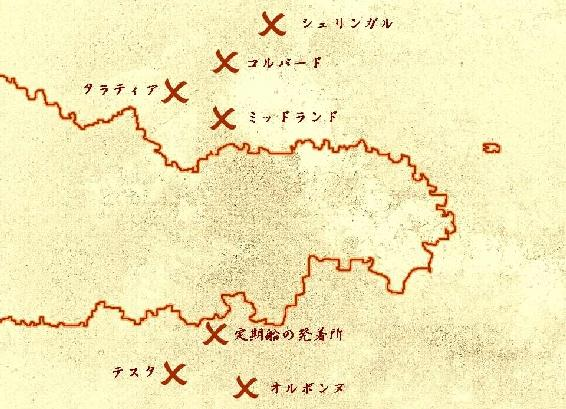

| 魔女と双子のポリティクス（１） | |
| 姉崎あきか | |
| eieiPublishing (2017) | |
姉崎あきか
＜表紙イラスト提供＞
人物：アトリエそらくじら（http://sorakujira.yu-yake.com/index.html）
背景：しじみのおすまし（http://www7b.biglobe.ne.jp/~osumashi/）
月：幻想素材†銀の月†（http://ginnotuki.webnode.jp/）
フォント：びゅんびゅん→SSS（http://sapphire.hacca.jp/）

逃げているのは少女だった。
煙の立ちこめる薄暗い回廊。両脇の壁に、燭台の灯りが点々と伸びている。その導きを追うように、幼い娘は長く伸びた緑の髪を振り乱し、息を切らし走っている。
背後に火の手が迫る。
「姫さま、煙をお吸いにならぬよう」
少女の手を引きながら、従者は鎧からはみ出た衣服の布を破って手渡した。少女はそれを口にあてる。
従者の姿は人間ではない。白い毛に覆われた長い耳、丸い顔、赤い目、口元から生えたひげ。指のはっきりわかれていない、やはり白い毛に包まれた長い手。つまり彼は重く豪奢な鎧を着て二本の足で立ってはいるが、白兎さながらの容貌であった。ぴんと伸び、真ん中あたりで下に垂れた左耳の根元の部分だけが、リングのように紫色の毛で囲まれている。
轟音がして床が大きく揺れた。
回廊の天地を貫く柱がわずかに蠢いた。
突如、少女めがけて倒れてきた柱に、従者は肩から体当たりを食らわした。傾く方向を変えた鉄柱は、うなりをあげて床の紋様を切り抜いた。火の粉が少女の頬を撫でる。
少女は左手で首にかけた紅の宝石を、きつく、握った。
......お母さま。
――これを持って逃げなさい。
先刻、目の前で炎に包まれ、焼けていった母の、最期の言葉。
――この先何があっても、誰にも渡してはいけません。
お母さま！
生き物が焼ける匂いをかぎながら、泣き叫んだ。
――決して......誰にも。
雷がけたたましく鳴った。曇天が弱い雨を降らせはじめた。
雨夜の空を大きく切りとっていた城は、まさに炎上への道を歩んでいた......。
草木も寝静まったかに思える静かな田舎街の月夜。
街外れにあるその屋敷は、ひっそりと樹々に囲まれてたたずんでいた。
人間の背丈の二倍はある両開きの正面扉の前には、これといって門番もおらず、脇の窓枠も木製であるところがいかにも田舎屋敷の風情である。
大屋敷といってもたかだか三階建てほどの構えで、雲も少ない真夜中の空に広がった星々が、微風にそよぐ葉の合間を縫って暖かく月明かりを届けていた。
二階の位置にある広めのバルコニーを覆う広葉樹の枝が不自然に揺れた。
と、そのとき大きく葉のこすれる音をたて、バルコニーに降り立った者がいる。
体躯は大柄で、頭に紫色のバンダナを巻き、口ひげがこげ茶色の髪よりも長く伸びている。ごてごてのジャケットの下に横にラインの入ったシャツを着ていて、それがさらに男を横に大きく見せていた。
大男は輪の形にした指を口にあてた。
小さく指笛が響き渡る。
樹々のざわめきがおこったかと思うと、瞬きをするほどの暇もなく、バルコニーの人影は三人になっていた。
大男が点呼といったふうにふたりを確認した。
「ルカ」
「へぃ」
「ゼル」
「はい」
「カイル......おい、カイルはどうした」
「あれ、アニキ......まいったな、またいつものじゃないッスか？」
ルカと呼ばれた少年がうんざりしたようにゆっくり頭を横に振った。短い赤毛がおくれて小さく円を描いた。
「ええ、きっとその辺にいるでしょう」
ルカと同じくらいの年の少年、ゼルは細身の長身に羽織った長いコートをひるがえし、辺りを見まわした。
「......ったく、ひさびさの大仕事ってときによ」
そうぼやく大男の鋭い目にはしかし、余裕の色が浮かんでいる。
「お前ら、わかってんな。この街一番の金持ちの屋敷だ。当然いつもより警備は厳しい。ぬかるなよ！ 失敗となりゃあ、この大盗賊ルグラン様の名が泣くぜ。まあ俺の辞書に『失敗』の二文字はのってないんだがな、ガッハッハッ」
「親方、笑い声が大きすぎるッス！」
「おう、いけねえや」
背伸びして大男のひげもじゃの口をふさごうとするルカを見ながら、ゼルは、
「この親方にしてカイルさんあり、といった感じでしょうか」
と皮肉っぽく笑っている。
オルボンヌは職工の街だ。大工、木彫り職人、服飾、装飾品の作り手など様々な職人たちが腕を競っている文化の街。しかし、それは昼の顔。夜は街路には盗賊どもが徘徊し、夕に肉料理をあつらえていた店は、夜には安酒と、そして「仕事」の依頼で客をもてなす。
盗賊、といってもほとんどが義賊なので、街に荒くれ者がひしめくことはない。それどころか、この街では、盗みは暗に認められていた。たとえばたいていの金持ちの家には、盗賊が盗みに入るための倉庫部屋が備えてあって、主人は盗まれてもいいもの――つまりは盗賊にやるための物品だが――を適度に置いておく。
義賊は盗んだ品々を金に替え、身よりのない孤児などを引き取り、弟子にする。あるいは、稼ぎの大きい盗賊グループは孤児院に寄付金をもたらすことも少なくなかった。
月のおかげで夜道の明るい、今日のような夜は、金持ちの家は窓脇に盗賊を導くための人形を飾る。義賊たちは倉庫へと連なるその木彫りの目印を辿って、「盗み」を成し遂げる。
資産をけちって、導きを怠った財産家は、手錬れの盗賊たちによって何を盗まれても文句は言えない......。と、これがオルボンヌの住民たちの慣習だった。
「アニキ、今日はどんな登場するッスかね」
「あれがカッコイイと完全に勘違いしていますね、カイルさんは」
「アニキ、それなりにカッコいいんスけどねぇ」
「しかしそれはカッコつけてないときに限りますね」
「その通りッス！」
「お前ら無駄口叩いてる暇があったら、さっさと目印でも探しやがれ！」
ルグランが二人をたしなめる。
「今回盗むのは倉庫の品だけじゃねえからな。ヘタすりゃ気づかれて騒がれる。おまけに帝国警察も盗賊の取締りを強化したとなりゃ、用心に越したことは......」
と、そこまで言いかけたルグランをさえぎって、上から声が聞こえた。
「危険を侵してこそ真の盗賊さ」
傾斜の急な屋敷の屋根に後ろ向きにたたずむ少年がいた。
紫のバンダナからゆるやかにうねった金色の髪をあふれさせ、後ろで結わえている。薄手の布の服の腰もとには蔦の装飾のほどこされた、幅の太いベルトが巻かれ、傷んだ革靴は足になじんでいる。ルカやゼルとそう変わらない年だろうに、軽装の衣服の上からでも無駄なくついた筋肉が見て取れ、動きの俊敏さを思わせた。
「月の明りのオルボンヌ 謎も危険もかえりみず
宝石どもが我を呼ぶ 立てば盗賊座ればシーフ
歩く姿は疾風義賊 東に金貨の千枚あれば
いつのまにやら煙と消えて 西に幻の絵があれば
額だけになって雲隠れ
それもこれも天下の大盗賊のシゴト！
そう カイル様たぁオレのことよ！
Ａｈ、ソイヤソイヤ！」
向き直った少年は切れ長の茶色い目をかすかに細めた。カイルと名乗ったその少年が涼しげな顔で詩吟の余韻に浸っている間、ルカとゼルはといえば――
「ああ、相変わらずセンスゼロッス」
「最後のソイヤソイヤは完全に余計ですね」
「立てば盗賊座ればシーフ......聞いてて情けなくなるッス」
「疾風義賊というのも謎ですね」
と、あきれ顔である。
「バカカイル！ 早く降りてこい！」
ルグランにさとされて、カイルは屋根を蹴り、バルコニーへと降り立っ......たなかった。
ジャンプ直後に身軽に宙返りをした彼は、そのまま背中から着地したのだった。
「大バカ者。でっかい音たてやがって」
ルグランは皮膚の硬そうな大きな掌で顔を覆った。
「いいか、俺はここで見張りをしてるから、お前たちは計画通りにさっさと仕事をしろ。わかったな！」
カイルが起きあがるのを待たずに、ルグランは三人に言った。
「それからカイル！」
「へ？」
「調子に乗りすぎるなよ」
「まかせときなって！」
半身を起こしたカイルがこぶしで胸をたたいた。
「ったく、おまえはそうやっていつもいつも。だいたいこの間の......」
「親方、今はそれどころじゃ......」
口をはさんだのはルカだ。
「う......。そ、そうだな。よし、仕事にかかれ！ ぬかるなよ！」
バルコニーの左端の扉の鍵をゼルが器用に開け、三人は潜入を開始した。
三人が屋敷の奥へ消えたのを確認するとルグランは手近な樹に飛びうつり、息を潜めた。
屋敷の大門から伸びる石畳を見つめながら、耳をそばだてた。
風が樹々を揺らす音にまじって、虫の声がする。
そして遠くで......。
「......やはり来たか」
ルグランはひとりごちて、上着のポケットに手を忍ばせた。
蝋燭の灯りをたよりに、三人は仕事にかかっていた。
暗い部屋に少年たちの大きな影がゆらめき踊っていた。無造作に置かれた戸棚。怪しげな甲冑をまとった銅像。古い宝箱。剥き出しのまま放られたアクセサリ。それらのひとつひとつが炎に照らされて、命を得たように影を舞わせている。
「にしてもよ、今回の仕事、なんか腑に落ちないんだよな。ルグランらしくないっていうか......。あ、ゼル、こっちも頼むわ」
カイルは床下に隠れていた金庫の開錠を頼んだ。
「そうッスね。いつもの親方なら家宝に手をかけようとしただけで叱るッスもんね。『大事なものを盗んじゃいけねぇ』とかなんとかって。アニキなんかそれで何度メシ抜きにされたことか。おっと、これならオイラで大丈夫ッスよ」
ルカは声を立てないように笑いながら、こぶしで金庫をぶち破った。
「ものを盗んじゃいけねぇ、なんて言う盗賊がどこにいるってんだ。毎回今回みたいな仕事なら燃えるのにな」
「何でも親方の気のおけない友人からの依頼だとか言っていましたね。『ヤツは信頼できる』と。はい、こっちは開きましたよ」
「おう、サンキュー、ゼル。気のおけない友人ねぇ......『ヤツは間違った仕事は頼まねぇ』ってルグランがよく言ってる、アイツのことかな。名前は......何だっけ、シ......シル......」
「アニキ、名前なんて知ってるんスか？ オイラがいくらきいても教えてくれなかったッスよ」
「私にも明かしてくれませんでしたね」
「まあ......、ルグランも気まぐれだからな。で、依頼されたブツはどこにあると思う？」
三人は顔を見合わせた。
「見る者の心を静めるサファイア......」
「その青は海よりも深い......」
「ティアーズ・アイ......この部屋には置いてないことだけは確かだな。......おし、ここはまかせたぜ」
カイルは胸もとから麻の袋を取り出し、ルカに放った。
「ちょっと行って、ちゃちゃっと盗んでくらぁ」
「ちゃちゃっと......って見当はついてるんですか？ カイルさん、相当広い屋敷ですよ」
カイルはしばらく思案した。
「まぁ、そんなに大事なものなら、肌身離さず、ってとこだろ」
「......寝室ッスか？」
袋の口を開きながらルカが言った。
「ああ。確か三階だったよな」
煙玉をこしらえながら、ルグランは街と屋敷をつなぐ石畳の道を見下ろしていた。
千人近くはいるだろうか。
視線の先には黄土色の鎧を身につけた兵士たちが整列して並んでいた。列の向かいに、同じ色のコートをはおり、帽子をかぶった男が立っている。中年から初老にさしかかるくらいの年齢で、体つきはしっかりしていた。
「あいつらを追ってはや何年になるか。今度という今度は絶対に捕まえてやるぞ！ 準備はいいか！」
太い声を張りあげる男の意気込みとは反対に、部下の兵士たちは、
「へ～い」
と情けのない返事をまばらに返した。
「しゃんとせんか、しゃんと！」
「へ～い」
「みな、持ち場は頭に叩き込んでおるな！」
「へ～い」
「それでは各自、配置につけぇい！」
「へ～い」
部下たちはいかにも気の向かない足取りで、屋敷を囲むように歩きはじめた。
「どうせまた捕まらないんだからよぉ～、手ぇ抜いたもん勝ちだって」
「もし捕まえたってよぉ～、昇進するのはカトウ隊長だけだろぉ、マジになるほうがおかしいっつ～の」
次々に指示を出す帽子の男のほうを盗み見ながら、部下たちはこんな具合のことを小声でぼやきあっている。
帝国警察隊長官、カトウはのろのろと歩む兵士たちを両手をあげて急きたてた。
爆音はそのとき、鳴った。
門の脇にたどりついた兵たちの足もとから煙が発する。
同時に、ほか二、三ヶ所からも破裂音がして、白い煙が昇った。
煙を浴びた兵士たちは、ひとりまたひとり、その場に崩れ落ちた。
重い鎧が石畳を打つ音が響く。
突然の出来事にカトウは目をみはった。倒れてゆく部下のほうへ、きょろきょろと目をやりながら、声をかける。
「ど、どうした？」
してやられた、という表情を作る。
「くぅ～、先制をとられたか。敵は近くにいるぞ！ 弾の飛んでくる方向を見定めるのだ！」
「へ～い」
庭の花壇の近く。屋敷の側面にある大窓の下。切り株の根元......。煙玉は続けざまに大音をあげた。焦げくさい匂いがいっそう濃くなる。
「そこだっ！」
カトウの腕が一本の大樹を指し示す。
樹の上、葉陰の奥には、マッチを口にくわえたままのルグランがいる。
カトウをはじめ、兵士たちはその樹めがけて走りはじめた。
「......打ち止めか」
そうつぶやいてルグランは長い指笛を強く吹いた。退却の合図だ。
自在に樹を飛び渡りながら、ルグランがバルコニーに降り立ったのと、カイルたちが屋敷から出てきたのが同時だった。
「いったん撤退だ！ すまねぇな。だいぶ頭数は減らしたが、今日はやけに数が多い。ここはひとまずバラバラに逃げるんだ。うまく奴らを撒いたらアジトに集合だ。いいな！」
「ふっふっふっふっ」
意味ありげな含み笑いを浮かべているのはカイルだ。
「いったん、だって？ 大手をふって退却、の間違いだろ、ルグラン？」
「そうッスよ、親方」
カイルは懐から重そうな宝石を取り出し、ルグランに放った。
空中で、ティアーズ・アイの深い青が月明かりを吸い込んで怪しく光った。そして、ルグランの手に収まった。
「お前ら......でかした！」
当然よ、という顔をしているカイルの横で、ゼルがはにかんだようなほほ笑みを見せている。
「よし！ 大盗賊団トリオンズ、退散だ！ 最後まで気を抜くんじゃねぇぞ！」
「おう！」
声をそろえる三人に、ルグランはつけ加えた。
「いつもの黄色い兵たちに混じって、今日は赤い鎧の奴らがいるだろう」
屋敷に向かって走ってくるカトウの部下たちのなかに、確かに褐色の鎧をまとった兵士が何人か、いる。
「奴らには注意するんだ。いいな」
トリオンズのメンバーたちは目をあわせうなずきあい、四方に散った。
街の中心へと続く石畳の脇の樹々、薬草屋のトタン屋根、宿屋の屋上のテラス......。月夜のオルボンヌの街並みを見下ろしながら、カイルは金色の髪を風になびかせて、逃げていた。
長屋造りの民家の屋根の斜面に降りたち、辺りを見渡した。
ルグランの言ったとおり、やたらと兵の数が多い。
目抜き通りのタイルのモザイク模様の上を、大勢の兵士たちが右に左に、駆けまわっている。
ルカやゼルたちは無事に逃げているだろうか。
ふと、足下に無骨な手が伸びてきた。
カイルは素早く、バックステップで後方に退いた。
屋根の上に足がかかる。現れたのはカトウだった。
昇りきって立ち上がったカトウの足もとはおぼつかなく、腰が引けている。
「カイルぅ～！ 今日という今日は絶対にお前を逃がさんぞ！ いざ、勝負だ！」
そう言うカトウの手はしかし、屋根にそえられていて、前屈のような格好での戦線布告となった。
「カトウのおっさんも、懲りないなぁ」
「黙れ黙れぇ！ いつもいつもおちょくりやがって」
カトウは勢いよく立ち上がった。......だが、バランスを保てずやはり前屈にもどる。
カイルはこのいまいち決まらない長官がよろよろと屋根のてっぺんまでのぼるのを口笛を吹きながら待ってやり、やがてふたりは両斜面に片足ずつを置く体勢で、対峙した。
「さぁ、かかってこい！」
「逃げようとしてる盗賊にかかってこい、なんて言う警官がどこにいるってんだ、おっさんよ。ところで、今日はやたらと数だけは多いみたいだな。あの茶色い兵士たちは新入りか？」
「あれはドゲル様の直属の部下だ。そんなこと、お前に関係なかろう！」
ドゲル......か。
「そうか......。まぁ、おっさんのぬるい手下たちよりは使えるって感じだな」
「な、なんだと！」
「大笑いだぜ。さっきルグランが煙玉投げただろ、あれ睡眠弾じゃないぜ」
「なぬっ！」
「たまたま材料が足んなくてな、今日のは動きを鈍らせる弾薬しかこめてないのさ。つまりおっさんの部下たちは弾にかこつけて、お仕事をサボタージュってわけだ」
「ふんぬっ！」
憤慨するカトウを見ながら、けらけらと笑うカイル。
「煙の色と匂いでわからなかったか？」
そのとき、カトウの背後に突然、茶褐色の鎧が現れた。
銃器を手にし、こちらに向けている。
「おっさん、あぶねぇ！」
カトウが振り返る。
鋭い音を立て、放たれた銃弾がカトウの帽子と、カイルの紫色のバンダナをかすめた。
「お主、ワシを殺す気か！」
褐色の兵はカトウに構わず、カイルに銃を向けた。
「おっさんにもう少し聞きたいこともあったんだが......しょうがねぇな」
カイルはじりじりと後じさり、続けざまに打たれた三発の銃弾をかわした。
「おっさんも、撃たれんなよ！」
兵が弾をリロードしている間に、カイルは隣の屋根へと飛びうつった。
小走りで脇を通りすぎる兵にぶつかり、カトウは転んだ。屋根からずり落ちそうになる。
「ふんぬぅ～！」
起きあがってよろけながら地団駄を踏むカトウを尻目に、カイルは通りへ飛び降りた。
黄土色と褐色の兵たちが取り囲むように迫る。
カイルは胸元から黒い玉を取り出し、その手を大きく上げた。
刹那、カイルの足元から強い光が広がる。
兵たちは目を覆う。
次の瞬間には、彼らは少年の姿を見失っていた。
......だいぶ撒いたか。
勢いよく修道院の屋根から飛翔し、カイルは地面に降り立った。
そのまま後ろ向きに走ろうとして......。
鈍い音を立てて、何かにぶつかった。
「きゃっ」
思わず尻もちをついたカイルの目に映ったのは、カイルと同じくらいの年頃の少女だった。
「ごめん。......大丈夫？」
カイルは少女に駆けよって、手を差し伸べた。
緑色の長い髪が肩のところでゆるやかにうねっている。少女は髪の色に似合う、やはり深い緑色の瞳を細めた。
少女はとまどいがちにカイルの手を取り、ゆっくり立ちあがった。
「ありがとう。あなたこそ平気？」
少女は純白の修道服を軽くはたきながら、透き通った声でそう言った。
「オレは平気だよ。こんなことくらい慣れてるさ」
「慣れてる......？」
少女は修道院の屋根をけげんそうに見上げた。そして、カイルをまっすぐに見つめた。
なんだか不思議な雰囲気の子だな。
そう思って、カイルは少女の優しそうな柔らかい面差しをまじまじと見て、つい目をそらしてしまう。
と、首からさげられた重そうな首飾りに目がとまった。
「あれ、そのペンダント......」
「えっ？」
そのとき、遠くから太い声がした。
「隊長！ あっちです！」
カイルは慌てて振り返り、走りはじめた。
「わりぃ。そんじゃ、またな！」
「え......ちょっと」
少女はカイルの走り去った方向を、呆然と見つめていた。
屋根の塗装のはげかかった、古めかしい修道院の前に、少女だけが残った。
太い声が近づいてきた。
「隊長、また見失っちゃいましたぁ～」
「なぬぅ～？ おっと、すみませんがお嬢さん。この辺りで怪しい奴らを見かけませんでしたかな？」
ぼんやりと立つ少女を見つけ、声をかけたのは、ふらふらと歩く部下たちを引き連れたカトウだった。
少女はちらとカイルの走っていった方を見て、
「いえ......」
と言った。
「そうですか。では......失敬」
カトウは少女に敬礼をすると、街の方へと引き返しながら高々と声を張り上げた。
「お前たち、今夜は徹夜で見張りだ！」
「へ～、......え、えぇ～？」
職工と義賊の街、オルボンヌの空に浮かぶ月は、繰り広げられる逃走劇など我知らぬという顔で、暖かい光を届け続けていた。
外から鳥のさえずりが聞こえてくる。
衣服や食材などが置かれた地下部屋。
壁にかけられたいくつもの修道服、前がけ、立てかけられた書物の数々、何かの儀式に使うらしい燭台や蝋燭、小さな部屋の隅には、長さの違う鉄の板を張りめぐらした楽器や、細長い笛などもあった。古びた食器棚のなかに何種類かの野菜が所狭しと押しこまれている。
階上からわずかに差しこんだ陽の光の筋が、薄闇のなかで舞うほこりを目立たせていた。
カイルは小麦のつめられた袋の上で目を覚ますと、座ったまま首を左右にひねり、伸びをした。
すっかり冷たくなってしまった服が足に張りつき、軽く身ぶるいがおこる。
隣の木箱に山のように積まれてあったリンゴをひとつ手に取り、ほこりを払ってかじった。
冷たく甘い汁が口のなかに広がった。頭がすっきりと冴えた。
昨夜の街中を横断しての逃走の末、カイルは結局オルボンヌ修道院の離れにある地下倉庫に逃げ隠れ、そこを寝床としたのだった。
オルボンヌ修道院は街一番の古い建物だ。初老の女性の院長と子供たちが住んでいるが、彼らがみな修道士、修道女であるかといえば、そうでもない。
オルボンヌ院は、貴族や金持ち、そして盗賊らからの寄付で成りたっている、孤児院であった。引き取られた孤児たちは十の誕生日を過ぎる頃になると――もちろん、誕生日ひいては自分の年すらも定かではない捨て子もいるのであるが――街の店や職人のもとで下働きをするようになる。
十六になる頃までには立派な大人として定職を見つけ、孤児院を出る。そうして、いっぱしに稼ぐようになった者は、少ない稼ぎのなかから孤児院に、ほんの気持ち程度の寄付を送ることも多い。
街には修道院出身者も増えてきて、今では院は歴史や芸術などを教える学校のような役割も担っていた。
芯だけになったリンゴを床に放ると、カイルは立ちあがり、耳を澄ました。
地上から、鳥の鳴き声にまじって、朝露の草をかきわけ向かってくる足音が聞こえた。
大人の足取りではないことを聞きわけながらも、カイルは階段裏に並ぶ樽の間に身をかがめた。
扉を開ける音がして、足音は階段を降りてきた。
昨夜の、修道服の少女だった。
カイルは安心して、立ちあがった。
「きゃっ！」
ランプを手に戸棚の前で野菜を選んでいた少女は、人の気配に気づき、小声をあげた。振りかえり、カイルの姿を見とめ、胸をなでおろす。
「ごめん。びっくりした？」
少女はくすりと笑った。
「あなたって、いつも人をびっくりさせてるのかしら」
二人は目をあわせ、ほほ笑みあった。
「昨日の夜はありがとう。カトウのおっさんをうまくごまかしてくれて」
「あのひとたちに追われていたの？」
「うん。あいつらさ、警察なんだ。......ちょっと色々と事情があってさ、わかるだろ？」
「警察の人たちに追われてるの？」
少女の緑色の瞳がまっすぐにカイルを見つめた。
「......あなたって、悪い人なの？」
カイルは一瞬、面食らい、そしてすぐに吹き出した。
「あっはっはっは。あんた、ほんとに変わってるな。ま、そう思う奴らもいるかもね。オレたちは一応『盗賊』ってことになってる。でもオレたちには信念ってヤツがあるんだな。ただ金が欲しくて盗みに入るような連中とは違......」
「......」
少女はカイルの言ったことの意味がよくわからない、というように首を傾けた。
ちょっと語りすぎちまったかな。そう思ってカイルは話をもとにもどした。
「そんでさ、あいつらを撒いて逃げようと思ったら、そこらじゅうで張りこみしてやがるから、さすがのオレでもここから抜け出すのは無理だったってわけよ」
「それじゃあ一晩中ここにいたの？ ......寒かったでしょう？ 言ってくれれば毛布くらい持ってきたのに」
カイルは再び笑い出した。
「おいおい、盗賊をかくまったら、君だって警察に追われることになるぜ」
「そ......それはそうだけど......」
カイルは困った表情の少女を面白がって見ていた。
「そうだわ。昨日、ペンダントがどうとか......言っていたわよね？ これ......」
少女は胸もとの首飾りを示した。
「ちょっとよく見せてくれる？」
装飾金具に縁取られた、重そうなルビー。深い赤色を放っている。
「......うん、これとそっくりな宝石を見たことがあるんだ。それはルビーじゃなくてサファイアだったけどね」
「ね、何か知ってることはない？」
突然、少女が大きな声でカイルを問いただした。カイルは驚いて少女を見つめ返す。
「いや......オレもちょっと見たことがあるってだけだから......」
「そう......」
少女は悲しげな表情を浮かべてうつむいた。
「君の方こそ、このペンダントに何か......？」
「......。あのね、わたし......実は......、記憶がないの。でもね、うっすらと、記憶の遠く遠くの方に......、少しだけ憶えてることがあるの。このペンダントはね、誰か大切な人からもらった、大切なもの......」
ゆっくりと、何かをたぐりよせるようにぽつぽつと話す少女を、カイルは黙って見つめていた。
「きっと......、このペンダントは、わたしが帰るべき場所へ導いてくれると思う。なんとなく、そう思うの。でも、何の手がかりもなくて......」
帰るべき場所......か。
「その......ペンダントに似てるって言ったサファイア、ちょっと理由があってオレたちの親方が持ってるんだ」
「それ、見せてもらえないかしら？」
少女の口調が一段と強くなった。
「わかった。頼んでみるよ。君のことも話しておく」
「ありがとう！」
「と、その前に......ここから逃げる手助けをしてくれないかな。夜が明けきっちまうと逃げにくくなる。......あの服、貸してもらえる？」
カイルのさす指の先の壁には、いかにも女性ものの、ピンク色のフリルつきのワンピースがかかっていた。
「えっ？ いいけど......」
「サンキュ」
カイルは素早くそれを取り、布の服の上からかぶった。
「ちょっとごてごてだけど......おっとこれはこうしなきゃな」
ワンピースの下にちらりと見えていた裾をまくりあげる。細い、しかし俊敏そうな足首があらわになった。
「靴は......まぁ、このまんまでいいだろう。それと、あの帽子も、いいかな？」
カイルはつばの長い布製の白い帽子――やはりフリルがついていた――を取り、深くかぶった。
少年の、涼しげな顔立ちを別にすれば、ちょうど小柄な大人の女性の背格好に見えなくもない。
「じゃ、また後で迎えにくる」
階段をのぼりしなに、カイルは唖然として立っている少女に声をかけた。
「まだ、名前聞いてなかったね。オレはカイル。君は？」
「......シエラ」
「昼には孤児院の方に行くから。じゃ、後でな、シエラ」
カイルはシエラに向かって片目を軽くつむり、ワンピースをひるがえして地下部屋をあとにした。
修道院から街の目抜き通りの方へ向かう道に、警察隊たちは張っていた。
夜が、明けはじめている。
カトウはコートの襟を立て、がたがたと震えながら充血した目をあちこちにやっていた。
徹夜明けの部下たちはといえば、座り込んであくびを噛み殺す者、鎧の腰どめをもてあそんでいる者、街路樹にもたれかかったまま立ち寝をしている者もいた。みな一様に、退却の合図を待っていた。
うつむき加減で、カトウに近づいてきた者がいる。
「失礼、ちょっと通してくださいませんこと？」
全身ピンク色のフリフリに身を包み、白い帽子を目深にかぶっている。
「おお、これはこれは失敬。ときにお嬢さん、こんな明け方にどちらへ？」
「隊長ぉ～、かわいい部下たちをほっといてナンパですかぁ～？」
浅黒い頬を赤くしたカトウをなじったのは、民家の壁に背をもたれていた兵士だ。
「ふぬ、とんでもない！ 職務だ職務！ お嬢さん、すみませんが、この辺りで怪しい奴らを見かけませんでしたかな」
「い......いえ。それではごめんあそばせ」
軽やかな足取りで去って行く華奢な後姿に、カトウは上気した顔で見とれていた。
「......ふぬ、可憐なり」
......人気のない朝のオルボンヌの路地裏に人影がふたつ、あった。
壁と壁に挟まれた、狭く暗い道。
うち捨てられた腐った果物や、残飯の匂いにつられ、猫が何匹か迷いこんでいた。
ひとりは、兵士である。身にまとった青銅の鎧の肩には、三頭の龍の紋章が烙印されていた。
そしてもうひとりは、十四、五くらいの年の少年であった。
「例のものは手に入ったか？」
――ああ、親分が持ってる。
「小賢しいな。ここには持ってこなかったか。まあ、よい。いずれにせよドゲル様の手に収まることに変わりはない」
――もう、いいか。
「ああ。次の指令は追って連絡する。報告の方は随時怠るな」
――あ......ああ、わかった。
「......なんだその目は。重ねて忠告するが、反抗期も行きすぎるとお前のためにならんぞ」
少年は唇を噛んだ。冷えた下唇に暖かい血がにじんだ......。
オルボンヌ修道院の一階の食堂は、朝食を食べ終えた子供たちのはしゃぎ声に満ちていた。
「シエラおねえちゃん、きょうもとーっても、おいしかったよ！」
「ありがとう、カーク」
シエラの純白の修道服の袖にまとわりついて甘えているのは、坊主頭の男の子だ。
「びえーん。ルーイがあたしのくまさん、とったー。びえぇん、びぇえーん」
「ちがうんだよ、おねえちゃん。ぼくはただ、ミモザとあそんでやろうとおもっただけなの！」
顔をくしゃくしゃにして泣きわめく四歳くらいの女の子を追って向かってきたのは、生まれたてのような、さらさらと綺麗な髪を困ったようにいじっている、男の子だった。
「もう、ふたりとも困った子ね。ほら、仲直り」
シエラは食器を洗う手をとめ、ミモザとルーイの手をとり、互いにしっかりと握らせた。
泣きやんだが、まだしゃくりあげているミモザ。つながった手から目をそらすように、ルーイはまだふてくされている。
「カークも一緒に遊んであげてくれる？」
「うん、いいよ！ でもそのまえに、おさらあらうのてつだうのー！」
「あたしもー！」
「あ、ずりぃ！ ぼくも！」
三人を筆頭に、他で遊んでいた子供たちも集まってきて、流し台のまわりは大混雑。
そこにやってきたのは小さな丸い眼鏡をかけた、美しい白髪の初老の女性だった。
「シエラさん、お客さまですよ」
「院長先生。すみません、洗いものが終わったらすぐにまいります、と伝えていただけますか？」
「残りは私たちが洗っておきますよ。今すぐ行ってさしあげなさい」
「はい。ありがとうございます。......みんな、しっかり先生のお手伝いをしてあげてね。お祈りの前までには、ちゃんと着替えもすませること」
「はーい」
シエラは濡れた手を拭いて、食堂をあとにした。
玄関には無造作にたたんだ衣服と帽子を手にした、カイルがいた。
「おはよう。これ、サンキュな」
「どういたしまして。無事に逃げられたのね、よかった」
「まあな。シエラのおかげだよ。......君のこと、親方に話しておいた。サファイアも見せてくれるってさ」
「ありがとう！」
「あぁーーーーーーーーー、カイルだぁ！」
甲高い声を張り上げて、男の子が短い足で走ってきた。
「おいおいカーク、カイル兄ちゃん、またはカイル様と呼べって！」
カイルは優しく笑いながらそう言った。
「ミモザーっ！ カイルがきてるよー！」
「カークのこと、知ってるの？」
シエラはけげんそうにカイルの顔をのぞきこんだ。
「カイルはね、カモメていのアルバイトのおにいちゃんなんだよ」
「あっはっは、まあそんなところだ」
「のんのん、ちがうんだな。カイルおにいちゃんはね、しっぷうどとうのだいとうぞくなんだよ、ねーっ？」
高い位置で結んだ三つ編みをぴょんぴょん跳ねさせながら、ミモザが駆けてきた。
「あたしはね、おおきくなったらカイルおにいちゃんみたいな、とうぞくになるの！」
「あ、ずりぃ！ ぼくも！」
遅れてやってきたのはルーイだ。
「じゃあ、みんな、十才になったら、トリオンズに弟子入りするか？」
「するー！」
子供たちと戯れはしゃぐカイルを見つめながら、シエラは温かい気持ちになった。
このひとは信用できるのかもしれない。
身につけたルビー以外、何の手がかりもなかった自分の過去に、一筋の光が差した気がした。たとえ一縷の細い光でも、たどって行けばどこかに出られる......。
「こらこら、あなたたち、お客さまのお話の邪魔をしてはいけませんよ」
院長がやってきて、騒がしい子供たちを食堂へとうながした。
三人はカイルから受け取ったピンク色のワンピースを広げたり、帽子をかぶってみたりしながら、にぎやかにもどっていった。
「立ち話もなんですから、奥へいらっしゃってはどうですか？ お茶もお入れいたしますよ」
院長は穏やかな声でゆっくりとそう言った。
「いや、オレはここでいいっすよ」
「あの......、院長先生。ちょっと......出かけてきてもいいでしょうか？ できるだけ早くもどります」
「おやおや、シエラさんが外出を頼むなんて、珍しいですね。どうぞ、ゆっくりいっていらっしゃいな。街の外へは行かないのでしょう？」
「ええ。ありがとうございます。では、午後のお茶の時間までには帰ってきます」
「気をつけていってらっしゃいな。帰りがけにガーベラの花のブーケをいくつか、頼んでもいいかしら？」
「はい。買ってまいりますね」
外に出てオルボンヌ修道院の重い扉を閉め、カイルは言った。
「オレたちのアジトがあるのは、さっきカークも言ってた、カモメ亭っていう海鮮料理屋だ。......じゃ、行こうか、シエラ」
「うん。......カイル......様」
「ぷっ」
カイルは思わず吹き出した。
シエラは不思議そうに首をかしがせる。
「おいおい、シエラは、カイル、って呼んでくれていいって。ほんとに面白いなぁ。......じゃ、行くぞ！」
「うん......カイル！」
二人は街の中心に向かって歩き出した。
海鳥の看板が下げられた扉を押して、カイルとシエラは潮の香りのただようにぎやかな海鮮料理屋に足を踏み入れた。
昼食にはまだ少しばかり早い時刻だが、カモメ亭の大きさのまばらなテーブルの数々は来客によって、ほぼ埋まっていた。
もっとも、来客といっても、今は盗賊たちがほとんどである。
生身の魚の切り身にカモメ亭オリジナルのソースをかけた盛り合わせをほおばっている少年たちも、貝柱の塩焼きをつまみに、昼間から安酒をあおっている若者たちも、たいていがルグランをボスとする盗賊団、トリオンズのメンバーであった。少ないが、女盗賊の姿も何人か見られる。
たまの大きな仕事が成功すると――今日の場合は、ティアーズ・アイの入手である――、盗賊たちは「夜明けの晩餐」と呼んでいる、軽い打ち上げパーティーをする。帝国警察隊の厳重な張り込みで、カイルたちのアジト帰還がおくれてしまったため、今日は「夜明けの晩餐」が昼近くまで続いてしまっている、というわけだ。
カイルは店の隅の小さな木製のテーブルに、シエラをうながした。
店内の誰もが目の前のごちそうと、そして歓談とに夢中になっている。ルグランの姿は見えなかったが、ルカもゼルも、仲間との談話に花を咲かせていた。
「ジュネ、こっちのテーブルに海鮮サラダとブレッド！」
カウンターの奥の背の高い椅子に腰かけている中年の女性に、カイルは手をあげて注文した。
「大きいテーブルんところに何でもあるだろ。自分でやっとくれよ」
ジュネと呼ばれた小太りの女性は手にした新聞から目をあげることもせず、つっけんどんにそう言った。
「おいおい、そんな接客ばっかりしてるから、こんな客しかこなくなるんだぜ！」
カイルがおどけてそう言うと、店のあちこちから軽い笑い声がおこった。
「アニキー、オイラが持ってきますぜ！」
「おう、ルカ。わりぃな。......シエラも、何か食べたいものあるか？」
「え、あの......わたしは朝食をいただいてきたばかりだし......」
シエラは盗賊だらけの料亭にいまいちなじめないようで、まごまごしている。
「まあ、そう言うなって。飲みものくらいなら入るだろ？」
「......ええ。じゃあ、お茶を」
「待ってました......いや、やっちまった、かな。ジュネ！ こちらさんがお茶をもらいたいってよ！」
ジュネは肉づきのいい耳をぴくりと動かし、たちまち新聞を放って、カイルたちのテーブルまで走ってきた。
「まあまあまあまあまあ、かわいいお嬢ちゃんね。カイルちゃんのガールフレンド？ カモメ亭特製のとーっておきのお茶がいっぱいあるのよ。何がいいかしら？ ラベンダーティー？ ミント？ カモミール？ ローズヒップとレモングラスもあるのよ」
先の図太かったジュネの声は、裏声になっていた。
「......女将さん、人格変わってるッス」
「今度はハーブティーに凝ってるみたいですね」
山盛りのサラダとブレッドを手に、ルカとゼルがやってきた。
「えっと、あの......じゃあ、ミントティーをいただいていいかしら？」
「もちろん！ ふふふーん」
ジュネは鼻歌を歌いながら、カウンターの方へ戻って行った。
「アニキ、こちらの女性は？ 誰ッスか？」
「あ、あの......はじめまして。修道院の、シエラともうします」
シエラはあわてて立ちあがって、ぺこりと頭をさげた。
「お......おう、こちらこそはじけましたッス。ルカともうしあげつかまつりたてまつりそうろうッス......」
ルカは同じくらいの年の少女の丁寧な言葉遣いに、恐縮してしまっている。
「はじめまして。ゼルです。ときに、その首からさげたペンダントが気にかかりますが」
「おいおい、ゼル。初対面の女の子にいきなり装飾品の値踏みはないだろう」
カイルがサラダを口に運びながら、ゼルをたしなめた。
「まあ、ちとそのことで来たわけなんだが......ルグランはどこにいる？」
「たぶん、まだ地下にいるんじゃないでしょうか」
「何か調べものがある、みたいなこと言ってたッスよ」
「はーい、お待たせ。カモメ亭特製ミントティ『くまのくまさんによる夢の輪舞曲は愛の香り』よ！」
ジュネの歌うような裏声が話をさえぎった。
テーブルに置かれたトレイの上には、掌に余るほど大きな花柄のカップがいくつか、そのカップ五十杯ぶんくらいのお茶が入りそうな、やはり花の柄が散りばめられたポット、そしてメッセージカードらしきものを抱えている、不格好な茶色いくまのぬいぐるみがあった。
「おほほほほほ。ごゆっくりー」
ジュネはそれらをテーブルに移すと、満足そうな笑みを浮かべてもどっていった。
「......女将さんの少女趣味にはついていけないッス」
「なによりまず、ポットが巨大ですね」
四人はくまのぬいぐるみが抱っこしている、カードのポエムを読みはじめた。
「ボクはくまのこ こぐまのこ
夢の世界をひとっとび ふにふにふわふわお友達
一緒に踊ろ オドロオドロシー
風のロンドがささやくよ きっとボクって宇宙一
水のサンバはおおさわぎ きっとボクってプロダンサー
ワルツのリズムでまわろうよ！
手をとりあって仲良くね！
Ｏｈ！ シェケラシェケラ！」
「はあ、センスゼロッス。......こぐまのこ、って孫ってことッスかね」
「ワルツでどう踊ればかけ声がシェケラになるのでしょう」
「オドロオドロシー......って......」
「こぐまの自画自賛ぶりも気にかかりますね」
ルカとゼルの批評を聞ききながら、カイルは何か自分に似たものを感じていた。
四人はポットからミントティーをカップに注ぎ、飲んだ。
「味はいたって普通なんだよな」
「そうッスね。特製と言っておきながら......」
「市販のミントティーですね、これは」
「うん。おいしいね」
心からそう言っているシエラだが、なぜだかフォローしているように聞こえる。
何杯おかわりしてもなかなか減らないポットの中身がやっと半分くらいになった頃、料亭の扉が鈴の音を鳴らしながら開いた。
入って来たのは、背の高い、二本の足で歩いている、兎だった。
騒がしかった店内は急によそよそしい静けさに満ちた。誰もが小さく談話をしているふりをしながら、目の端で突然の訪問者に嫌悪のまなざしを向けている。
兎はゆっくりとジュネのいるカウンターに近づいた。羽織った黒いぼろぼろのジャケットの袖口から、灰色の毛並みに覆われた腕が伸びている。藁のような、草の匂いが漂った。兎姿の訪問者は並べられている各種の酒のなかから、小さな赤いビンを、指のわかれていない右手で指し、無言で薄い硬貨を一枚、差し出した。
ジュネが厳しく眉間にしわをよせた。
「あいにく、兎人に売る酒はうちにはないね」
ジュネの声は威圧するように太く、強かった。
「カイル、ラビトって？」
緊張の面持ちで成り行きを見ていたカイルに、シエラはそっとたずねた。
「見ての通りだよ。人間の大きさを持つ兎。言葉は話さない。どこかの山に隠れ住んでる部族って話だけど、こんな街中に姿を見せるなんて、ちょっと珍しいな。オレも久しぶりに見たよ」
カイルは小さく答えた。
「悪い人なの？」
「それは......」
「悪者ッスよ。今は無害なふりをしているッスけど、昔は野に潜んで旅人を襲うこともあったらしいッス。アイツだって今に何おっぱじめるかわかったもんじゃねぇ」
小声で口をはさんだのはルカだ。まるで嫌なものを見るような目つきで、兎人を見ている。
「そうなのか？」
「そうッス。アニキ、知らないんスか？」
「多くの歴史の本に、そう書いてありますね」
「オレは勉強は苦手だからな......」
ジュネの声がふたたび張りあがった。
「帰っとくれ！ この酒は一杯四十ジェムだよ。そんなはした金見せないどくれ！ ......場違いなんだよ！」
ののしられた兎人は、がさごそとポケットの中に手を入れ、大きな硬貨をもう一枚、取り出した。
五十ジェム硬貨だ。
「やめとくれ！ 獣の匂いのついた金なんて。さっさと出てお行き！」
ジュネはカウンターの上にあった新聞を丸めて、兎人の手を勢いよく払い続けた。
成り行きを見ている客の中には、食べかけのパンや皿を、兎人に向かって投げる者もいた。
兎人は背を丸めて、灰色の毛につつまれた両手で頭を覆った。
「やめて！」
突然、大きく響いた声に、店内は静まりかえった。
誰もが驚き、振り返って声の主を見つめた。
彼女は立ちあがると、そのままゆっくりと、カウンターのそばまで歩いて行き、ジュネを見据えた。強い意志の宿った、緑のまなざしで。
「やめてください」
声の主は、シエラだった。
「この人の持つお金が受け取れないのならば、代金はわたしが払います。だから......もうやめてください」
ジュネをはじめ、誰もが何が起こったのかわからないというような面持ちで、シエラを見ていた。
そして、その場にいた誰よりも驚いたのが、カイルだった。
「シエラ......」
そのとき、カウンターの手前の床板が四角く外れた。
「ジュネ、俺からも頼む」
登ってきたのは、紫色のバンダナをつけた、大柄な男だった。
「ルグラン。それにお嬢ちゃんも。誰が何と言おうと、あたしゃ兎野郎に売ってやるつもりはないからね！」
「......。......頼む、この通りだ」
ルグランは急にしゃがみこむと、大きな両手を床につけて、上体をひれ伏した。
「ちょっと......やめとくれよ」
土下座するルグランを見下ろしながら、ジュネはとまどっていた。
「オレからも、頼む」
カイルはいたたまらなくなって、ルグランの横に出て行き、同じようにジュネに向かって上体を倒した。
カモメ亭の店内には異様な光景が広がっていた。
女将に向かって土下座する大男と少年。たたずむ長身の兎人と修道服の少女。それらを黙って見つめる客......。
「お前ら、親方がこんなに頼みこんでるのに、指をくわえて見ている奴があるかってんだ！」
カイルが顔をあげ、振り返って叫んだ。
その声を合図に、トリオンズのメンバーたちは席を立ち、ルグランとカイルに続いてひれ伏した。
「ちょ......あんたたちまで。顔をあげとくれよ」
店内の客の多くが床に伏して土下座している。面白くなさそうな表情を作り、席を立とうとしない者も、もちろんいた。椅子に腰をかけたまま目をそらしている者のなかには、ルカの姿もあった。
「わ、わかったよ。売ってやればいいんだろ、売ってやれば」
ジュネは観念して、小ビンの中身をグラスに注ぎ、カウンターの上を滑らせた。グラスがとまったところで、赤い酒が波打ち、こぼれる。
「さっさと飲んで、さっさとお帰り！」
ジュネは兎人がグラスの脇に置いた五十ジェム硬貨を取ると、声を荒げてそう言った。
一連の騒ぎが収まり、兎人が帰ったあと、ルグラン、カイル、シエラの三人はカモメ亭の地下部屋へと降りた。トリオンズのアジトである。
地下室といっても、カモメ亭の店内よりも広い。盗賊団全員が降りても、まだ若干の余裕があるほどのロビー。さらに奥に続く廊下の両脇には、寝室であろう小部屋がいくつも連なっている。
まさに、いっぱしのアジトといった感じで、階上へ続く階段だけが幅狭く伸びていた。もっとも、カモメ亭の床板が出口となっているその細長い階段は、ひとつのみならず、ロビーの四隅の他にもいくつかあった。
ロビーは盗品の数々、盗賊たちが使う細工のほどこされた道具、古めかしい書物などで散らかっていた。
窓はもちろんなかったが、壁から触手のように生えているランプがいくつも灯っていて、意外に明るい地下部屋だった。
三人はロビー中央にあったソファーに、それぞれ腰をおろした。
「シエラちゃん......だったっけな。ジュネが、すまなかったな」
「いえ。こちらこそ、ごめんなさい。初めての場所で、あんな......取り乱してしまって」
「ジュネはあれで案外頭の固いところがあってな、ほんとにすまねぇ」
延々とあやまりあっているルグランとシエラに、カイルが口をはさむ。
「それにしてもよ、シエラ、なんだか別人みたいだったぜ。怯えたみたいに急に目の色を変えて、そうしたら突然立ちあがって......」
「ごめんなさい。あの人......あの兎人の姿を見たら、遠い、遠い記憶がなんだがざわめき出して......、気がついたら、自分を失ってしまって......」
「兎人が何かシエラの過去にかかわっているのか？」
「わからない。でも......きっと、わたしが記憶をなくす前、最後に見た人が......兎人......、そんな気がする」
そのとき、部屋の隅の階段の方から、床板の外れる音がした。
降りてきたのは、ミントティーのポットとカップを手にした、ジュネだった。
決まりが悪そうに、眉根をさげている。
黙ってミントティーを三人分注いだあと、口を開いた。
「お嬢ちゃん、それにルグラン、カイルも。さっきは、すまなかったねぇ」
「気にすんなって。いつもオレらにしてる接客の方がよっぽどひどいぜ」
おどけるカイルに、ルグランが調子をあわせる。
「間違いねぇや。俺に頭っから熱湯をぶっかけたこともあったな。ガハハハハハ」
「ちょっと、お嬢ちゃんに勘違いされちまっちゃ困るじゃないか。あのときは足がもつれてだね......」
必死に弁解するジュネ。
シエラはくすくすと笑っていた。
笑顔がもどったシエラの様子に、カイルは安心していた。
「ところで、ふたりとも、よく帰ってきたねぇ。相当のドンパチがあったみたいじゃないか。カモメ亭まで聞こえてきたよ」
「このカイル様が......」
「このルグラン様が......」
二人は同時に言いかけて、ちらと目をあわせて笑った。
「捕まるわけねぇってんだ」
「捕まるわけがねぇだろ」
ジュネとシエラはやんちゃな二人を温かいまなざしで包んでいる。
「近頃の帝国の盗賊征伐は、ちょいと行き過ぎに見えるね。この街にゃこの街なりの法ってものがあるんだ。よそ者が口出して変えられる伝統じゃないさね。ああ、統治の緩かった王政時代が懐かしいよ」
ジュネは不服そうにもらした。
「......帝国？ 王政？」
シエラがけげんそうにカイルにたずねた。
「あんた、そんなことも知らないのかい？」
ジュネが驚いたように目を丸くして、シエラを眺めた。
それをカイルがかばう。
「あ、つまり......彼女は......」
「わたし、記憶がないんです。憶えているのは、修道院で暮らしていたこの一年のことだけ。それに、ほとんど修道院から出なかったので、この街のことも、院長先生が話してくださったこと以外には、よく知らないんです」
「まぁ、そういうわけだ。シエラはトリオンズのことも知らなかったみたいだしな」
「そうかい。それは大変だったねぇ......。王政ってのはつまり......」
オルボンヌも含むこの国の領土は、ちょうど十年前まで、タラティア王国が治めていた。統治のゆるやかな、分権を重視した長く続いていた王政時代であった。しかし、その政権が壊れるときがきた。
十年前の、タラティア城炎上という事件である。
大火災に見まわれ、国王を含め、王家の血筋を引くものは、みな城とともに息途絶えた。不幸中の幸いであろうか、同時に降り出した豪雨により、火の手が城下町まで及ぶことはなかった。
しかし、以前から武装により力をつけていたコルバードの金持ちたちが、一部の貴族を祭りあげ、以来、コルバードは帝国として国中に帝政を張った。
首都もタラティアからコルバードへと移り、タラティア城下町の民も災いの地から他の地区へと移住し、今ではタラティア城付近は無人の廃墟と化している。
「......十年前のあの出来事。一夜にして、歴史に残る業火と大雨とが同時に起こったんだ。今でもみなの記憶に新しいさね」
ジュネがそこまで語り終えると、ルグランがつけ加えた。
「もっとも、あの事件には色々といわくつきなんだがな。まず不思議なのは、城にいた誰ひとりとして、助かった者がいねぇ、ってとこだ。城外にいた門番くらいなら、逃げ出せてもおかしくないはずなんだがな。それに、おかしな噂話もちらほらと耳にする......」
「噂って？」
カイルがたずねる。
「ああ、なんでも、城が炎に包まれる前に、真っ白な光を見た者が城下町に何人もいたって話だ。なかには城の上空に浮かぶ人の姿を目にした、なんて言い出す奴もいたらしい。それに何より、まるであがった炎を消すかのように降り出した豪雨、ってのも偶然にしちゃでき過ぎてるんじゃねぇか、なんて言う奴もいる。......まあ、いっこの城が炎上したんだ、根も葉もねぇ噂話は絶えねぇだろう。そんなとこだとは思うがな」
「ああ、嫌んなるさね。雨が、もうちょっとだけ早く降ってくれればねぇ。今頃まだタラティア王政が続いてただろうに。......ああ、話しこんじまったね、すまないねぇ。お嬢ちゃん、ルグランに話があって来たんだろ？ 汚いとこだけど、ゆっくりしてってくれていいからね」
ジュネはそう言い残すと、カモメ亭へとあがって行った。
「で、シエラのペンダントのことなんだが......、おい、シエラ？」
「......」
「シエラ？」
「あ......あの、ごめんなさい。はい......このペンダントです......」
シエラはかぶりを降ったあと、首飾りを外し、ルグランに見せた。
ルグランは興味深そうに、渡された宝石を色々な角度から眺めた。
豪奢な装飾金具に縁取られた、吸い込まれそうなほど深い、赤色。見るものの心に一瞬の波立ちを覚えさせるような、限りなく濃い、赤。
「間違いねぇな。このティアーズ・アイと同じ出所だろう」
ルグランはごつごつした上着の懐から、重そうな青い宝石を取り出した。
シエラのペンダントと同じ装飾の施された、青いサファイア。その青はやはり、きりなく深かった。
「俺の調べが正しけりゃ、こいつは、ブラッディ・アイって呼ばれてる、ルビーだ。何か、千年前の聖戦の伝説と関わりがあるって話だ」
カイルとシエラは鼓動を早くさせながら、ルグランの次の言葉を待った。
待った。
待った。
......。
「まさか、......そんだけか？」
たまらずカイルが口を開く。
「それだけだ！」
胸を張って自信満々に断言するルグラン。カイルは思わず額に手をあてる。
「おいおい、せめてもっとマシな情報はねぇのかよ。聖戦とどう関わってるか、とか」
「ねぇ！」
またもやきっぱりと言い切るルグラン。
「シエラ、これ見て、何か思うこと、あるか？」
「うーん......、ごめんなさい。やっぱりわからないわ。その......ルビーに感じてるような、強いざわめきがないの。わざわざ見せていただいたのに、ごめんなさい」
「そっか。まあ、気にすんなって」
「それでも、よければその伝説のお話、聞かせてくれないかしら？」
「大した話じゃないぜ。千年前に勇者が魔物を退治しましたよ、ってそんだけだ。だろ、ルグラン？」
「ああ。正式な歴史でもなけりゃ、魔物の骨がどっかから出てきた、って話も聞かねぇ。この宝石との関連話も、大方、取引値をつりあげるためにどっかの商人がでっちあげたほら話ってとこだろうな」
「まあ、夜泣きの子供を寝かしつける寝物語くらいには、なるだろうけどな。むかしむかし、魔族と人間が別れて争っていたときの話です......ってな具合だ」
「そう......」
シエラはルグランから返されたルビーを再び身につけた。
「そうだ、シエラちゃん。さっき、兎人が自分の記憶に繋がってる、みたいなこと言ってたよな」
「ええ。わたしにもよくわからないんですけど」
「だったらテスタに行くのもひとつの手かもしれねぇ」
「ルグラン、テスタって何だ？」
「言ってみれば、兎人たちの隠れ家だな。そこに行けば、シエラちゃんが最後に見た兎人がいるかもしれねぇ。いなかったとしても、何らかの手がかりはつかめるかもしれねぇしな。オルボンヌからそう遠くない、西の山奥にある。大人の足で一日歩けば余裕で着く距離だが、往復となると日帰りするのは、少しきついだろうな」
「へえ。兎人の里はあの辺にあったのか」
シエラは視線をしばらく宙に泳がせ、そして決意の表情を見せた。
「わたし、そこに行ってみます」
「ちょっと待った。兎人は言葉を話さねぇんだせ。ほんとにどうにかなるのか、ルグラン？」
「テスタの村には老齢の人間がひとり、いると聞く。浮世を離れて兎人たちと隠れ住んでるくらいだ、相当変わり者には違いねぇがな。そこはカイル、お前がなんとかしろ」
「は？」
「バカカイルが！ シエラちゃんをひとりで旅させるつもりか？」
ルグランの瞳に余裕の笑みが浮かんでいた。
「オレは......もちろんついて行くさ。心配なのは、オレのいない間のトリオンズの方だぜ」
「ガッハッハッハ。調子に乗りすぎるなよ！」
「任せとけって」
ルグランは豪快に笑った。そして、ふと口調を落として、続けた。
「なにか手がかりがつかめれば、そこからまた長旅になるかもしれねぇ。それくらいの覚悟は、シエラちゃん、あるんだろう？」
「はい」
「俺の方でも、そのルビーの経緯がわかれば、調べておく」
「はい。色々と、本当にありがとうございます」
「いやいや、気にしちゃいけねぇや。これにはちっと、個人的な興味も手伝ってるんでな。......それと、シエラちゃん、ティアーズ・アイは三日後には、依頼人に売っ払っちまうが、いいか？」
「ええ。もちろんです。ありがとうございました」
シエラはそしてカイルの方に向きなおり、ぺこりと頭をさげた。
「ありがとう......カイル」
ルカ、ゼルをはじめ、トリオンズのメンバーたちに見送られて、カイルとシエラはカモメ亭をあとにした。
「ちょっと、花屋さんによっていいかしら？ お使いを頼まれていて」
「ああ、いいよ」
花屋の他に、ふたりでいくつか店をまわり、修道院に着いた頃には陽はもう真上にのぼっていた。
「院長先生にごあいさつと、それから旅の仕度をしてくるね。しばらく待っててもらっていいかしら」
修道院の玄関ロビーの壁によりかかり、カイルは待った。
みな授業の最中なのだろうか、子供たちのはしゃぎ声は聞こえない。
しばらくしてシエラがもどってきた。
フードのついた白いローブに身を包み、肩まであった緑色の髪は後ろで一度束ねて、おろされている。ローブ腕の付け根のところに切りこみが入っていて、丈も膝の少し下のあたりまでで、全身を覆う修道服と違い、いかにも動きやすそうであった。
「おまたせ」
「じゃ、行こうか」
民家が少なくなり、そろそろ街を出るという頃、遠くからふたりを呼びとめる幼い声があった。
「おねぇちゃーーーーん！」
見ると、息せき駆けてきたのは、修道院の子供たちであった。
ミモザの小さい手からこぼれだすように、ガーベラの花飾りがあふれていた。
オレンジ色の花弁がいくつも、優しいベージュの包みに抱かれて舞い踊っている。
「あのね、いんちょうせんせいとぼくたちで、つくったんだよ！」
カークのぜえぜえしながらの、精一杯の笑顔。
「ぼくがひもをとおしたんだよ」
ルーイの得意げなほほ笑み。
ミモザから渡された花飾りで、シエラの両手は、オレンジ色に隠された。
「ありがとう、みんな」
「あのね、いんちょうせんせいが、きをつけていってらっしゃい、って。カイルおにいちゃんにもよろしく、って」
ミモザが幼い手でカイルの腕を取った。
「ああ、ありがとな」
「カイルおにいちゃん、おねえちゃんをなかせないでね」
「何言ってるんだミモザ？」
「だって、あいのとーひこーなんでしょ？」
「おいおい......」
カイルは思わず赤面する。
シエラも照れながら、優しい笑みをもらしていた。
「ありがとう......みんな」
涙を浮かべている子もいれば、いっちゃやだ、とシエラにぎゅっと抱きついて離れない子もいた。
「はやくかえってきてね！ やくそくだよ！」
修道院にもどって行く子供たちを見ながら、シエラの胸はいっぱいになっていた。
カーベラの花束に隠れて、一枚の手紙が入っていた。
それを読んでいるうちに、シエラの瞳から抑えていた気持ちがあふれだした。
『親愛なるシエラさんへ。
あなたは本当に素敵な人です。
一年前、あなたが修道院の裏の森で膝を抱えて震えていたとき、私は本当に驚きました。どうしたんですか、お家へは帰らないのですか......何をたずねても、怯えた目をして、うつろに首を横に振るばかり。ただ名前を聞いたときに、シエラ、と答えたきりあなたは、何かをしきりに怖がっているように、黙っていました。
ずっと何も口にしていないかのように、やせ細っていたあなたを抱いて、私は修道院に引き返しました。雲を抱いているみたいに、とても軽かったのを今でもよく憶えています。
食事をあげても食べてくれず、あなたはすすのついたように汚れた服を着替えようともしないで、ふさぎこんでいましたね。それでも、あなたは徐々に、閉ざしていた心を開いてくれるようになりました。あのとき、怖がったりせずに、あなたに語りかけ続けてくれた子供たちにも、私はとても感謝しています。
あなたは本当に素敵な人です。
ぽつぽつと話しはじめ、次第にほほ笑むようになり、食事の用意を手伝ってくれるようになった頃には、子供たちと仲良しになっていましたね。とても明るくて、素直な優しい子。
このままあなたの記憶が戻らなければ......。一瞬でもそう思ってしまった罪深い私を、あなたは赦してくれるでしょうか。明るさを取りもどしていくあなたが、家事や子供たちの面倒を見るのを手伝ってくれるほどに、私は、あなたが私の本当の娘であったら......どんなにそう願ったかわかりません。
子供たちは十六を過ぎるまでには、それぞれ自分の居場所を見つけ、修道院を出て行きます。大人になっても一緒に暮らしていける、自分の子供がいたなら......。寂しい老婆のこの気持ちをあなたは察してくれますか？
あなたの記憶がもどらなければ、この先、私はあなたを自分の生んだ娘のように育てられる。そして、共に修道院を......そう思ってしまった、私の罪深さをお赦しください。
あなたにはあなたの帰るべき場所があるのです。いつか離れるときがくるのでしょう。それをわかっていながら、私は、自分の都合だけであなたの記憶が失われたことを密かに喜んでいたようです。どれだけあやまれば、あやまりきれるでしょう。
今朝方、あなたに迎えがあったとき、私は予感していました。あなたはここではない、自分の居場所を見つけに行くのでしょうと。あなたの過去が明らかになるのを、今は心から願っています。老いてゆく私の心の支えになっていたあなた。あなたの幸せは、私の幸せです。
あなたに本当に感謝しています。
素敵なシエラ。
オルボンヌ修道院院長アンヌより』
広い部屋は西日に包まれていた。
少女は窓辺の揺り椅子に腰をかけ、鳥かごの中のカナリアに話しかけていた。幼女とも言えるほどに幼い、しかし寂しげな美しい顔立ち。
ふたつ並べて置かれたベッドも、ふたつずつある異国の人形も、本も、おもちゃの楽器も、何もかもが黄昏色に染まっていた。
少女のまっすぐな長い髪だけが、取り残されたように深く、黒い。
同室の少女は、重そうな鎧をまとった兎人と、何やら楽しそうにお喋りをしている。
窓の外を沈んだ黒い瞳で眺めている少女のそばに、たまにやってきては何かを語りかけ、また兎人のそばへもどって行く。
大きな扉が開き、少女たちの両親がやって来る。
白い服の少女と兎人は部屋を出て行く。
豪奢なドレスを身にまとった女性が、窓辺の少女を誘う。
窓の外に広がる街並みから目をそらそうともせず、少女は小さくかぶりを振る。
だだ広い部屋に、黒髪の少女がひとり、残された。
夕陽が山脈の稜線に沈みゆくほどに、ランプの灯されていない部屋は、その闇の密度を増して行く。
あの子がいなければ......。
自分の心の闇までもが広がってゆくような気分に、少女はなっていた。
あの子が誰かに笑いかけられるたびに、わたしはあの子の影になる。
――おいで。
ふと、荘厳な声を聞いた気がした。
――かわいそうな子。こっちへおいで。
自分の心の闇を、優しく撫でて慰めてくれるような、甘い誘惑に満ちた声。
でも、この声を受け入れてはいけないんだ。少女はしかし、頑なにそのいざないを拒んだ。わたしは、まだ、ここにいる......。
少女は鳥かごを開き、カナリアを華奢なひとさし指にとまらせた。
カナリアが小さくさえずる。
可愛いらしいその鳴き声に、少女はそっと安堵する。
わたしの本当の友達は、あなただけよ、リーネ......。
部屋が暗闇一色に染まった頃合、兎人と白い服の少女が部屋に戻ってきた。
兎人が壁のランプに次々と、灯りをともす。
リーネと呼ばれたカナリアは窓辺の少女の手を離れ、部屋を自由に飛びまわると、白い服の少女の肩にとまった。
歌うように小さくさえずり、少女の耳たぶを甘がみした。
――おいで。
――かわいそうな子。こっちへおいで。
心の闇が広がった。深い、深い暗闇。
黒髪の少女は闇の深遠へといざなうその声を、受け入れようとしていた......。
陽が落ちはじめている。
橙色に染まった山道から見下ろすと、オルボンヌの街並みが遠くに見えた。
相当高いところまで登ってきたが、けわしい森をきりわけて進んできたわけではなく、慣らされた山道は山を斜めに貫くように、緩やかに続いていた。もう少し歩けば、頂上まで行けるだろうか。
しかしながら、村がありそうな気配がいっこうにない。
「ルグランから聞いた限りでは、そろそろのはずなんだけどな。シエラ、まだ歩けるか」
「ええ。わたしは大丈夫」
「ああ、それから言い忘れてたんだけど、そのペンダント、ちゃんとしまっといたほうがいいぜ。オルボンヌを離れれば、義賊じゃない盗賊もいるからな。そのルビー、ぱっと見ただけで、値が張りそうなのは誰だって予想がつく」
「ええ。わかったわ。......ちょっと持っていてくれる？」
シエラは両手に抱いていたガーベラの花飾りをカイルに持たせ、首から外にさげていたブラッディ・アイを、ローブの内側に垂らした。
「これでいいかな？ ありがと」
シエラはふたたび花束を抱っこした。
水の流れる音が聞こえてきた。
急な角度で道を折れると、山の中腹から谷めがけて、大きな滝が流れているのが目に入った。
「あれ......」
シエラが下方を指さした。
山の中だというのに、谷の一部にひらけた場所があり、明らかに人の手が加わったとわかる花畑が、夕暮れ色に染まっていた。
「ビンゴ......だな」
ふたりは谷を降りて行った。
薄暗くなってゆくなか、花畑のまわりで、いくつもの影が動いているのがわかる。
「兎人たちだ」
「ここがテスタ村？ ......なんだか村っていう感じがしないね」
花畑まで近づくと、それまで群れていた兎人たちが一散に逃げ出しはじめた。
草むらに、樹の上に、岩の陰に......。花畑にいたときには二本足で歩いていたのが、急に四足で駆け、ものすごいスピードで散って行った。
様々な色の花が咲き乱れる花畑は、一瞬にして無人になった......ように見えたが、ちょうど夕陽を受けて気づきにくくなっていたようだ。ぼろぼろの黒いジャケットを着た兎人がひとり、隅の方にたたずんでいる。
「あ、あいつ......」
「カモメ亭に来た兎人さんね」
長身の兎人は、黒い目を細めて、灰色の毛に覆われたもこもこの長い手で、おいでおいでをしている。まるで笑っているような表情に見えた。
ふたりは兎人に導かれるままに、滝のそばまでやって来た。
泉に落ちる激しい滝の水しぶきが、たまに小さく顔にかかる。
兎人は右手を上下させながら、滝の裏側へ続く道へ入って行った。
ついて行くと、滝壷には、頭を引っこめてやっと通れそうな、小さな洞穴があった。
兎人は四つんばいになって、その洞窟の奥へと駆ける。
「入れ、ってことかな？」
「うん。行ってみましょうよ」
「大丈夫かな？ 入ったとたんに入り口が崩れて、はいそれまで、なんてことにはならないだろうな」
ふたりは身をかがめながら、狭い洞窟の奥へ歩いた。
ひんやりと冷たい空気が肌を撫でる。天井から垂れてきた雫が首筋にあたり、シエラは小さく声をあげた。
細い道を直角に折れたとき、急に視界がひらけた。
ふたりは思わず感嘆の声をあげる。
洞窟の奥には、広大な、村があった。
テスタ村はまるで自然物がそのまま村の形を成したような造りだった。
藁でできたテントのような民家。食堂であろうか、湿った地面の土から生えた樹が、アーチのように建物の形になっている。噴水のある広場へと続く中央通りの脇には、低木に蔦がからまったワゴンが並んでいて、中には花が咲いたようにポプリや果物がつめこまれていた。
「不思議なところね。なんだか懐かしい感じがする」
カイルたちの姿を見とめると、花やステッキを手にしていた兎人たちは、かさこそと建物の陰に身を潜めた。遠慮がちな視線で、突然の訪問者を見定めている。
いびつな形の岩に囲まれ、噴水の湧き出ている中央広場まで来ると、奥のテントから、小さな二本足の兎がふたりのそばに歩いてきた。
子供くらいの背丈で、ラベンダーの花柄が散らばった短い傘を、杖のようについている。威嚇するかのように、短い耳がぴん、と立っていた。
カイルたちのそばまで来ると、その兎はおもむろに口を開いた。
「人間どもがこの村に何の用じゃ」
「えっ？ 兎人が喋った！」
カイルは驚いて声をあげる。
シエラもびっくりして、目を大きくしていた。
「馬鹿者。兎人が人の言葉を喋るということも知らんのか。愚かな人間が。......もっとも、ワタシは兎人ではないがのう」
小柄な兎はそう言うと、ダンスでもはじめるかのようにくるりと回転した。手にした傘が綺麗な円を描いた。
赤い帽子。ところどころむらを成して、紫色に染まった白髪。しわだらけの横長の顔。帽子とおそろいの色の、だぼだぼとしたマントとローブ。短いラベンダーの傘はそのままだった。
兎は老婆の姿に変わっていた。
カイルとシエラは目の前の変身劇を、信じられないといった面持ちで見つめていた。
老婆のそばに駆けてきた兎人がいた。
先の、黒ジャケットの兎人である。
かがんで、老婆の大きな耳に手をあて、何かを耳打ちしている。
「ふむ......、キイリが世話になったようじゃな。人間どもはいけ好かんが、いたしかたないのう。それなりにもてなしてやろうじゃないか。ついてまいれ」
「......ふむ、話は大体わかった。それで、その兎人がこの村にいるのではないか、とそういうことじゃな」
三人は老婆の住む広いテントの中にいた。
草のベッドの脇に、やはり草の椅子がいくつかあり、それぞれ腰をかけている。高く伸びた名前のわからない植物がいくつか花を咲かせていて、そこから灯りがもれていた。
「残念ながら、この村には人間を恐れん兎人は、おらんよ。人目を避けてここを離れん者ばかりじゃ」
「さっきの背の高い奴は？ オルボンヌまで来たんだぜ？」
「キイリのことじゃな。キイリは人間の営む店で酒を飲みたいなんて馬鹿げた夢を持っていてな。夢がかなった、とたいそう喜んでおったよ。そのことはワタシからも礼を言おう。じゃがの、最近では山をおりた兎人はキイリひとりじゃよ」
「そうですか。何か心あたりがあればと思ったんですけど......」
シエラが残念そうに目を伏せた。
「ところで、婆さん。あんた何者なんだ？ 兎の姿をしてたり、兎人と話せるみたいだし、人間は愚かだと言ったり。......だいたいあんただって人間なんだろ？」
「婆さん、はやめんかい！ ワタシの名前はミランドラ。ああ、確かに主の言う通り、人間じゃよ。おそらくこの国の人間のなかで唯一の、魔法使いじゃ」
「は？」
「魔法使い？」
「ずいぶんとメルヘンチックな話じゃねぇか」
「ふむ。その顔は信じておらんな。じゃが、これを見ても、そう思うか？」
ミランドラは立ちあがって、傘の先で土の地面に何やら文字を書きはじめた。
ミランドラが気合をこめると、その文字がひとつひとつ光り、宙に浮き上がった。
やがて、ぽんという音がして、テーブルの上に三人分のティーカップが現れた。
続いてミランドラは、地面に短い単語を書いた。
すると、同じように浮かび出した文字が、光を放ち、カップの中が湯気を立てて茶色い液体に満たされた。
ふたたび座ると、ミランドラはカップを取り、中身をすすった。
「ホウジティーじゃ。主らも飲まんか」
ふたりは目の前で起こる奇跡の連続に、ただ呆然と口を開けていた。
「兎人は古の民じゃ。なかには万年生きる者もいる。愚かな人間どもよりもはるかに賢い、賢者たちじゃよ。古代の魔法の知識も、彼らのなかに生きておる。ワタシはそれを教わっただけじゃ」
「......すごい！」
「婆さん、すげぇな！」
ミランドラは自慢気にお茶を飲んでいた。
「じゃあ、婆さん。兎人の姿になってたのも、その魔法ってやつの力か？」
「そういうことじゃ。......婆さんはやめいと言っておるじゃろう」
「でも、おばあちゃん、そんな兎人たちが、どうして人目を避けるようになったの？ 人を襲うこともあったというけど、わたしには、それが信じられなくて......」
「おばあちゃん、か。まあよい。シエラ......じゃったな。主にそう呼ばれると、何だか不思議な気分になるのう。兎人が人間どもを避けるようになったわけ。それももとはと言えば、愚かな人間たちのせいじゃよ。主ら、先に聖戦の伝説の話を出したじゃろう。それもくだらん愚者たちが事実を都合のいいように美化した作り話じゃ。本当のところは、聖戦は人間同士の争い、つまり戦争じゃよ......」
千年前、人間たちはそれぞれに領土をわけて、互いに争っていた。自分の国土が広がれば、多くの富が手のうちに入る。肥大した欲望はとどまるところを知らず、人々は武装し、支配を広げようと戦った。
争いを好まない穏やかな兎人の街は、早くに滅ぼされ、街を追われた兎人たちは流浪の民となった。
やがて戦争に勝利した国は、自らの戦いを聖戦と称し、功績のあったひとりの武将を勇者として称えた。
魔族と人間との戦い......それは己の欲望のままなる戦争の意味を包み隠す、大義名分であった。そのときに、魔族と名指された民の一が兎人であった。
戦争が終わり、国が統一された後も、人々は魔物として兎人を迫害し続けた。野で兎人と遭遇した人間は、さも当たり前のように、正義感あふれたまなざしで、追いはぎにも似た行為を兎人に対して行った。
兎人が人間を襲った......その話の真実は逆に、人間に襲われた兎人の自己防衛であった。
どこにも安住の地を見出せなかった兎人たちは、やがてオルボンヌ近くの山奥に逃げ隠れ、ひっそりとテスタ村を築いた。
以後、人間と接してはならない、人間の言葉を話してはいけない......それが兎人の民の暗黙の掟となったのだった。
「くだらん、くだらん！ くだらなすぎて笑う気もおこらんよ......」
遠い昔の話を語り終えたミランドラの瞳には、静かな怒りの色が浮かんでいた。
「ひどい話......」
「じゃあ、聖戦の伝説は相当ねじ曲がって伝わっちまってるんだな。......でもよ、兎人たちが人間を避けてるんだったら、じゃあ婆さんはいつから、どうしてこの村にいるんだ？」
「それは......まあどうでもよいじゃろう」
うっすらと涙を浮かべているシエラの面持ちを、ミランドラは黙って見つめていた。そして......。
「ところで先の、主の見た兎人の話じゃが、心あたりがないわけでもないのう......」
「本当か？」
「話していただけませんか？」
「うむ。よいが......条件がある」
顔をあげたシエラを、ミランドラは鋭い目で見ていた。
そして、ぽっと顔を赤らめた。
「その、......花を......」
ミランドラは傘の先でシエラの抱いていた花飾りを示した。
「これ？」
シエラはオレンジ色の花弁が舞うガーベラを、ミランドラに渡した。
ミランドラは黙りこくって、込みあげてくる気持ちを抑えているようだった。
やがてすくっと立ちあがった。
「わーい、ガーベラじゃ。久しぶりじゃのう。美しきオレンジ、恥じらいの香り、見目麗しき可憐な花びら～」
花飾りをいとおしそうに抱きしめ、鼻を近づけたり、頭上にかかげたりしながら、ミランドラはくるくるとはしゃぎまわっていた。
カイルとシエラは唖然として、それを見守っている。
ふたりの視線に気づき、ミランドラは踊りをとめ、浅黒い顔を赤く染めて、こほん、と咳払いをした。
「その、つまり......これを......もらってもよいか？」
そう言うとシエラの答えを待たずに、ミランドラは花飾りをくるりとまわした。
光を放って、ガーベラが傘に吸い込まれて行く。
紫のラベンダー色だった傘は、ガーベラの花柄が加わり、オレンジがかった。
「るんるん。ワタシの傘はお花屋さ～ん！ 開くと風にコロンの香り～」
楽しげにぱっと傘が開かれ、あたりに花の香りが漂った。
ミランドラはちらとふたりを見て、照れてまた、こほん、と咳払いをした。
年がいもなくはしゃぐ老婆の姿を、ふたりが苦笑いで見つめていたその頃、夜のオルボンヌの街外れでは、ルグランが依頼人と立ちあっていた。
銀色の短い髪をまっすぐにおろした、背の高い男であった。いくつもの刀傷のついた、銀色の鎧をまとっている。ところどころに網目状のメッシュが入ったそのチェインメイルは、防御よりも動きやすさを重視したような趣きであった。
「約束よりずいぶんと早いじゃねぇか」
「急な入用でな。......約束の金だ」
依頼人はティアーズ・アイと引き換えに、金貨の入ったごつごつとした袋を手渡した。
「難儀な仕事をすまなかった」
冷たい表情を崩さないまま、依頼人は言った。
「気にすんな。俺とお前の仲じゃねぇか。ところでよ、こいつを手に入れたあと、ブラッディ・アイの方も目にしたんだが......」
「どこにある？」
依頼人の銀色の目が、鋭くなった。
「修道院に住んでた女の子が身につけてたのさ」
「修道院か」
「おっと、その子はもう旅立っちまったがな。そいつも入用なのか？」
「......」
「一体この宝石にはどんないわれがある？ 俺が調べた限りでは、大したことはわからなかったんだが」
「......私も詳しいことは知らされていない」
何か知ってやがるな。ルグランは直感的にそう気づいていた。
依頼人は去り際に一度、ルグランの方を振り返り、小さく唇を動かした。
「ルグラン......すまない」
オルボンヌの夜が更けていった......。
一通りはしゃぎ終え、気がすんだのか、ミランドラは落ちついて話しはじめた。
「先に村から出た兎人はキイリのみ、と言ったじゃろう。......実は、村を捨てた兎人が、ひとりだけ、おる」
カイルとシエラは一言も聞きもらさない、といったように、真剣なまなざしで、老婆の昔語りに聞き入っていた。
「そうじゃな、今から十年か、あるいはもっと前かもしれんのう。この村にふたりの幼い娘が迷いこんできてな。こんな場所に人間が訪れてきたのは、主らを除けば、後にも先にもこのとききりじゃよ。その娘のうちのひとりが、村の兎人のひとりをたいそう気に入ってしまっての、お家に連れて帰る、だなんてだだをこねはじめてのう。結局その愚かな兎人は、娘たちと手を取りあい、村を捨て、人間の世界へ出て行ってしまったんじゃよ。兎人と娘たちがその後どうなったのかは知らんが、その娘が育っていれば、シエラ、ちょうど主と同じくらいの年頃にはなっているじゃろうな......」
「その女の子がシエラかもしれないってことか？ シエラ、何か憶えてることはあるか？」
「......わからない。やっぱり......思い出せない」
「まあ、無理もないじゃろう。全くの別人かもしれんしのう。それで、その娘たちなんじゃが、たいそう高価そうな服を着ていてのう、それもそこいらの貴族の身につけているようなものとは段違いじゃった。ワタシはすぐに見抜いたよ。あの子たちはきっと王家の娘たちだったのじゃろうと。それから......いや、ありふれた名前じゃからまさかとは思うが......、王政時代最後の王の娘のうちのひとりが、ワタシの記憶が正しければ、シエラという名前だったんじゃよ......」
「まさか！ シエラがタラティアの皇女かもしれないってことか？ 信じられねぇ！ 王族の血は途絶えたんじゃなかったのか？ それに、皇女のうちのひとりってどういうことだよ？」
「......」
「まあ、待て。シエラが記憶を失ったのは一年前だったんじゃろう？ タラティア城が大火に見舞われたのは十年前じゃ」
「確かに......激しく計算があわねぇな」
「......」
「シエラ？ おい、シエラ？」
「どうしたんじゃ、シエラ？」
......シエラ。
......シエラ......。
......シエラ様。
――シエラ様、ここはもう崩れます。お逃げください。
熱風に包まれた、王宮の廊下。支柱を焼失した天井がまさに崩れようと、激しい音を立てている。息苦しい煙が、城中に満ちていた。
豪奢な鎧をまとった家臣たちは自らを犠牲に、襲いくる炎から少女を遠ざける。
目を開けていられないほどに熱い烈風に耐える、顔。
――姫さま、こちらへ！
そう発した直後、従者のひとりは、苦痛の表情を残して、業火に包まれた。
その、赤く焼けただれた、顔。
――シエラ、元気でね。
母の、最期の、笑顔。
――シエラ、母さんのことは私に任せるんだ。早く！
炎にのまれていった母のそばにおいてきた父の、赤い、緋い、顔。
顔。顔。顔。
――熱い！ 熱い！
苦痛に歪んだ、顔。顔。顔。
はっと息をのむ。大きく吸いこんでしまって、咳こむ。
従者の兎人に手を引かれ、布きれを口にあて、角を曲がったとき、少女は逃げ惑う人々の中に、ひとり、走ろうともせずにたたずんでいる人影を目にした。
冷たい薄笑い。舞い狂う炎の中、太い蝋燭を手に、次々と火を放っている。
その姿は......。
目を開けると、深緑の草がからまって自然と編まれたような、天井が目に入った。
横たわっているというのに、体の重さが、まるで鉛のように感じられた。
体を起こすと、肩から首筋にかけてが寝違えたように硬く凝っているのに気がついた。
わたし、あの後、気を失って、そのまま寝てしまったんだ......。
目が冴えるとともに、シエラは自分がテスタの村に来ていたことを思い出した。
夢の名残りが反芻され、シエラは小さくかぶりを振った。
一体、どのくらいの時間がたったのだろう。
ふと、香ばしい甘い匂いをかいで、シエラはテントの入り口に目をやった。
長く垂れた蔦ののれんをわけて、湯気の立った深皿を手にしたカイルが入ってきた。
「おはよう、シエラ。気分はどうだい？」
「あ、あの......わたし......」
「ほんとびっくりしたぜ。急に気を失って、呼びかけても答えねぇし。これ、ミランドラの婆さんが作ってくれた、トウモロコシのスープだってよ。熱いから気をつけな」
カイルは深皿とスプーンをシエラに手渡した。
「食えるか？」
「うん。ありがとう」
シエラは草のベッドに腰をかけたまま、スープをひと口、すすった。
口の中がきゅっと締めつけられるほどに濃い、甘いスープだった。
口にした途端、シエラは自分がとてもお腹が空いていたことに気づいた。考えてみればオルボンヌを出てから、今まで何も食べていない。
「おいしい......。ほんとにおいしい」
なぜだか、涙が出そうになる。
「おお！ 目覚めおったか！」
嬉しそうな声をあげ、テントにわけ入ってきたのは、ミランドラだった。
「おばあちゃん、とってもおいしいスープ、どうもありがとう」
「そう言われるとワタシも作ったかいがあるわい」
「あの、わたし......いつから」
「案ずるでない。倒れたのが昨日の夜じゃから、早く寝て遅く起きた朝、といったところじゃよ。心が落ちつくまで、ゆっくりしておるとええじゃろう」
「あの......」
「シエラ、無理すんなって」
「いいえ、大丈夫。そうじゃないの。わたし、いくつか思い出したことがある......」
「辛い記憶であれば、ゆっくりと時間をかけて思い出すことも、必要じゃろう。シエラ、昨夜はすまなかったのう」
「オレたち、昨日の夜、反省したんだ。シエラの気持ちも考えずに......先走っちまって......ほんとにごめんな」
「ううん、いいの。ふたりともありがとう。わたしは大丈夫だよ。あのね、思い出したこと、聞いてほしいの。おばあちゃんが言った通り、わたし、一度この村に来たことがある。それから、わたし、十年前の大火のときに......タラティア城にいたと思うの」
「そうか......」
「やはり、そうじゃったか」
「それから、わたしと一緒にここに来たのは、きっと......わたしの姉さん、だと思う......。でも、名前が......思い出せなくて......」
尻すぼみになりながらぽつぽつと話すシエラの顔を見つめながら、ミランドラは迷いがちに口を開いた。
「主と一緒にテスタに来た幼な子は......カミラ、と名乗っておったよ」
「カミラ......姉さん......」
うつむいて焦点のあわない視線を漂わせているシエラ。カイルは声の調子を明るくして言った。
「ほらほら、スープ冷めちまうぜ」
シエラはうん、と笑顔でうなずいて、トウモロコシスープをすくって飲んだ。
「しかし、王家の血を引くものが生き残っておったとなると、これは大事じゃぞ。この国の行く末を変えるかもしれん」
「そうだな。シエラ、これから先、安易に身分を明かさねぇ方が利口かもしれねぇ」
「ええ」
「そうじゃのう。帝政の甘汁を舐めている輩の中には、生き残った皇女の存在を面白く思わぬ連中も少なからずおるゆえ。......ときに、言われてみれば、シエラにはどこか高貴な気品が漂うておるのう」
シエラを見つめてにんまりと笑うミランドラ。
「おばあちゃん、やめてよぉ」
照れたように手を振るシエラ。三人は温かい笑いに包まれた。
「でもよ、確かにシエラには、どっかマリーズ王妃の面影があるよな」
「わたしの、お母さま？」
「ああ。とびきり美しい王妃さまさ。オレも彼女のファンだったぜ......なんてな」
「マリーズ王妃はその美貌もさることながら、瞳にはたぐいまれなる強い意志が宿っておった。貧民と被差別民の解放を叫んだ、国王に勝るとも劣らぬ、立派な方じゃったのう」
「ところで婆さんよ、昨日から気になってたけど、こんな山奥に隠れ住んでるわりには、ずいぶんと世事に通じてるじゃねぇか」
「......まあ、どうでもよいじゃろう。世の動きを眺めるのも趣味のひとつじゃ。婆さん、はやめろと言っておるじゃろう」
「婆さんは婆さんだろ？」
「大魔法使いミランドラ様と呼ぶのじゃ！」
ふたりのおどけたやりとりを、シエラはくすくすと笑いながら見守っていた。いつしか、スープは空になっていた。
「......結局、空白の九年間は謎のまま、ってことか」
「して、今後の身の振り方じゃが、シエラ、心と体が落ちつくまで、この村でゆっくりしていくとええじゃろう」
「おばあちゃん、わたし、タラティア城に行ってみる」
そう言うが早いが、シエラは立ちあがってローブのしわを整えはじめた。
「おい、シエラ。まさか、今すぐ旅立つつもりか？」
「ええ。早く自分のこと、知りたいの」
「主は強い娘じゃのう、シエラ。......記憶とは持ち主でなく、その場所にとどまるものじゃ。タラティアの城跡に行ってみれば、あるいはまた、何かわかるかもしれんのう。じゃが、タラティアへ行くとなると、相当の長旅になるぞ。東へ大きく迂回して、ひと月は歩き続けなければなるまい......」
「おいおい、老人は時が止まってるから困るのう」
カイルはミランドラの口調を真似して、からかうようにそう言った。
「北の発着所からミッドランド行きの定期船が出てるぜ。もう何年も前から、日に三度は運航してる。それに乗れば、一昼夜の航海で着けるってもんだ」
「なんじゃと？ そんな便利なもんがあったのか！ ワタシの若い頃は旅人は、徒歩とラクダ便で陸路をはるばる進んだもんじゃ。今の若いモンは苦労を知らんからけしからんのう」
「これだから婆さんは......」
「婆さんと言うでない！」
ふたりのやり取りはまた長く続きそうだ。
シエラはストップ、といったように、笑みをこぼしながらふたりをさえぎった。
「スープ、ごちそうさまでした。洗いものはわたしがやります」
「ああ、気を遣わんでええぞ。そこに置いておけば、あとでキイリが片づけてくれるじゃろ」
「いいの？」
「もちろんじゃ。いざ、しゅっぱーつ！ じゃ」
ミランドラは立ちあがって、赤いローブの腰ひもを締めなおした。
「は？」
「え？」
「何をぼさっとしておる？ ゆくぞぉー！」
「ゆくぞぉー！ ......って、婆さんも来んのか？」
「決まっておろう。若いモンには任せておけんからのう」
「おいおい、マジかよ......」
「それとも何か？ カイル、ワタシがいるとシエラに手を出しづらいと、そう言いたいわけかのう？ ほっほっほっ」
「おいおい、婆さんまでそれを言うか」
カイルは苦笑いで、ミモザに言われた言葉――あいのとーひこー――を思い出していた。
一行が山をくだり、草原を歩いて定期船の発着所に着く頃には、陽は南中をとうに過ぎ、大きく西に傾いていた。
周囲に何もない海岸線に、突然現れたかのように、二、三の簡易造りの建物が点々としている場所がある。そこが発着所だった。
塗装もされていない、木造の荒屋に、似合わないほどに大きな船が一艘、波を裂いてとまっていた。海鳥の鳴き声が、潮の香りに乗っていくつも聞こえる。
定期船を目にしたカイルが、口を、あ、の形に開き、顔をしかめた。
「この時間だと、もしかして......やっぱり......」
「どうしたの？」
不思議そうにたずねるシエラに、カイルは黙って船を指さす。
定期船には華やかな色が散っていた。
赤、青、オレンジ、緑、紫、銀色......。まるでパレードでもあるかのような風情で、作りものの花飾りや紙テープが大きな船体を埋めつくしている。
張られた巨大な帆には、大きな一匹の黒猫の顔が可愛らしく描かれており、海風を受けてまるで本当に生きているかのようにはためいている。
「相当ぶっとんだ趣味の船だろ」
「ほっほっほっ。たいそうにぎやかな定期船じゃのう」
ミランドラは余裕のある言葉とはうらはらに、瞳を輝かせて、なめるように船艇を眺めまわしている。誰にも聞かれないくらいの声で、お花屋さーん、とつぶやいた。
「はいはーい。ミッドランド行きの定期船、ウミニャコ丸！ 出発の時間でーす！ アタシがあと三百数えたら、出航だよー！ どなたさんもどなたさんも、乗り遅れのござらんよー、お願いたてまつる！ いーち、にー、さーん......」
桟橋の先でつやのある声を張りあげているのは、カイルやシエラより少しばかり年下であろうか、背の低い、水兵服の少女だった。
栗色にアッシュのメッシュの入った髪を高い位置で二つ束ね、触覚のように前におろしている。小さな顔を、表情をころころと変えながら、元気に数を数えている。
「あー！ カイルぅ！ ひさかたぶりー！」
少女はカイルに気づくと、胸の黄色いリボンをなびかせながら、小走りで向かってきた。
「カイルもご乗船？ しょうがないなぁ......そんなに言うのなら特別、運賃ロハにしてあげるよ！」
「おい、オレはまだ何も言って......」
「何よ、その浮かない顔は。まさか、あんなに仲むつまじく寄り添いあったピニャコのこと、忘れたわけじゃないよね？」
「おいおい、妙な言い方すんなよ」
「お知りあいなの？」
カイルの顔をのぞきこんで、シエラはたずねた。カイルの返答を待たずに、ピニャコが答える。
「カイルはね、アタシのグラッチェでボンソワールなフィアンセなんだよ！」
「お前、意味わかってねーだろ。まあ、こいつは昔の知りあいってとこだよ」
「ほっほっほっ。元気な娘さんじゃのう」
ミランドラは花飾りの散りばめた定期船を前に、気分をよくしたのか、幸せそうな声で笑った。
「そういえば、まだ言ってなかったな。オレがオルボンヌに来たのは五年前。実はオレはミッドランド出身なんだよ。ピニャコはそんときの、まあ、幼なじみみたいなもんだ。......ピニャコ、わりぃな。お言葉に甘えて、タダで乗せてもらうことにするわ」
三人は桟橋から船のデッキにかけられた、板を渡ろうとした。
「あー！ だめだめ、タダで乗っていいのはカイルだけなの！ おつきの者はちゃんと乗船券を買ってくだされ！」
「おい、そう言うなって、頼む、な？」
「うー、カイルに頼まれちゃ、アタシは嫌とは言えないよぉ」
ピニャコはいじけてうつむいていた。
カイルに背中を押され、シエラとミランドラは船に乗りこんだ。
「......にひゃくきゅうじゅうきゅうー、さんびゃーく！ 船長ぉー、げっと、れでぃ！ 錨をあげぇい！」
桟橋に残ったピニャコは、数え終えると、甲板に渡り、かけ橋をしまった。
定期船ウミニャコ丸の出航の汽笛が高らかに響いた。
ウミニャコ丸が港を発った直後、発着所に着いた三人がいた。
「バカ野郎！ おめぇがたらたらしてるから！ 見ろ、昼の便に間にあわなかったじゃねぇか」
豪快な声で赤毛の少年を叱りつけている大男は、ルグランである。
「親方ぁ。んなこと言ったって、アジトが散らかってて、どれが売っ払っていいもんなのか、見分けるの大変だったんッスよ」
背負った荷物を重そうに地面におろして、情けない声を出したのは、ルカだ。
「しょうがないですね。おとなしく次の便を待ちましょうか」
ルグランとルカを冷静になだめているひょろりとした少年は、ゼルである。
「オイラだって、ピニャコちゃんの船の方がよかったッスよ」
三人は口惜しそうに出航したばかりの定期船の後ろ姿を見つめていた。
「あっ！ あれ、もしかしてアニキじゃないッスか？」
急に、ルカが驚いたように声をあげた。
「あのバンダナと金髪......。そうみたいですね」
「なるほどな。やっぱり、ミッドランドに向かったのか」
「ん？ やっぱり、ってどういうことッスか？」
「ガハハハハ。気にすんな！ それよりお前ら、そのほこりかぶった商品でも磨いとけ。見た目が違えば、とんでもねぇくらい売値が変わることもある」
三人は手持ち無沙汰に盗品のほこりを払ったりしながら、深夜便の運航までを、延々と発着所で過ごすことになる。
夜の海原を駆けるウミニャコ丸の船内は、食事をすませた乗船者たちでにぎわっていた。
とりわけ、バーを兼ねた賭博場は、広大な貿易都市ミッドランドに着くまでの暇を持て余す行商たちにとって、仕事合間の格好の娯楽の場となっていた。
談話室や寝室と趣向を異にした、薄暗い部屋に、いい雰囲気の間接照明が空間を浮かびあがらせている。
バーカウンターの中で、涼しげな細長い目でシェイカーを振っている紳士はバーのマスターであろう。ルーレットの錆びた金色の針をまわしているのは、ディーラーとおぼしき、中年男性である。
商人の格好をした人たちがそれを取り囲み、テーブルの上に硬貨を積み重ねて、口々に何かを言っている。
カイルもそれに混じっていた。
「北北西に二十五ジェム！」
カイルはそう告げると、テーブルの上に、硬貨を三枚、出した。
「南方に百ジェム！」
「北東に、うーんと......十ジェム」
「東方に......五百ジェムじゃあ！」
行商人たちは次々に硬貨をテーブルの上に置いた。
ディーラーがコンパスを模したルーレットをまわす。
それぞれが、固唾をのんで、見守る。
地図の描かれた盤の上で、先の赤い針は、緯線と直角に引かれた経線から少し左にずれた方向に曲がり、とまった。
「よっしゃ！」
カイルは飛びあがって喜び、ディーラーから配当を受け取った。
後ろからやってきたシエラが声をかけた。
「賭け事もいいけど......ほどほどにね、カイル」
「ああ、わかってるって！ ミランドラは？」
「先に休むって。きっともう夢の中かな」
「もったいねぇな。せっかくの船旅をよ。そうだ、シエラ、ちょっと酒でももらうとするか」
「え......わたしはお酒は、いただいたことがないし......」
「はいはーい。お酒ならオススメのがあるよ！」
いつの間にかピニャコがそばに来ていた。
三人は小奇麗な格好で酒瓶を磨いている紳士のいるカウンターの高椅子に腰かけた。
「マスター、いつもの、みっつ、お頼みもうしあげる！」
元気よくそう言うピニャコに、カイルは慌てて返す。
「ちょい待った、シエラはあんまり強いのは飲めないぜ」
「心配ご無用。甘くて軽ーい、カクテルだよ」
マスターは透明な色のお酒と、黄色いすっぱい匂いのするジュース、それに濃い色のミルクのようなものをシェイカーで混ぜあわた。氷で満たされたグラスに注ぎ、色鮮やかなチェリーを添える。三人の前に出し、深みのある低い声で言った。
「ピニャコラーダでございます」
透き通った綺麗なグラスに、黄色がかった乳白色のカクテルが甘酸っぱい不思議な香りを漂わせていた。
「綺麗なお酒ね。ピニャコラーダ......って、もしかしてピニャコちゃんが考えたの？」
シエラがたずねると、ピニャコはぶんぶんと首を横に振って答えた。
「ピニャコラーダはね、遠い異国で飲まれてるカクテルなんだって。マスターが話してくれたとき、アタシもびっくりしてさ、作ってもらって、おいしかったから、それからアタシのお気に入りになったんだよ。ね、マスター？」
「さようでございます」
マスターは穏やかな口調でそう言った。
「ほれほれ、見とれてないで飲んでみぃ」
ピニャコにうながされ、カイルとシエラはカクテルを口にした。
「ん、うん。うまいじゃんか」
「うん。おいしい......けど、なんだかぽー、っとなって......」
シエラの頬は薄紅色に染まっていた。
「あはははは。シエラはほんっとにお酒弱いんだね。どこのお姫さまかしら？」
けらけらと笑いながら、ピニャコラーダをあおっているピニャコ。カイルとシエラは、密かに冷や汗をかきながら、笑顔を作った。
夜更かしをしてバーで静かな談話にふけっている行商たちをのぞいて、乗船客の誰しもが深い眠りの底に落ちていた真夜中。
静かなデッキにひとり、佇む水平服姿の少女がいた。
少しばかり欠けた月。負けじとまたたく満天の星々の明り。散りばめられた様々な色彩がにぎやかだった船体や帆柱は、薄闇の中、昼間の騒がしさを失って、落ちつき払っているように見えた。
海原を駆ける夜風に、少女の触覚のように垂らした髪が波打っていた。
段になっている船の縁に腰をかけ、少女は手にした弦楽器を膝の上に置き、足を水面に向かってぶらぶらとさせた。
遠い日の約束に思いをはせるその少女、ピニャコは、四本のナイロン弦が張られた楽器を、撫でるようにはじいた。
温かみのある音色が、ウミニャコ丸が海の表面を裂いて進む音と、まじりあう。
おろした腰に、船のエンジンの振動と音が、かすかに伝わってくる。
カイルはあの約束を憶えているだろうか。
海が鏡となって歪んだ形に月を映している。ピニャコはそのいびつな楕円を見るともなしに、見つめた。
大きくなったら、大盗賊になってやる。そうしたら、ピニャコ、船を一艘買って、世界中の財宝を手に入れに行こうぜ。
ミッドランドの港からふたりで水平線を眺め、幼い夢を語りあった。
憶えているのかな。
カイルがオルボンヌに行ったあと、アタシは造船所に弟子入りして、こうしてちゃんと自分の船をいっこ、航海士として任されるようになったんだよ。
お父さんとはどうなったのかな。まだ喧嘩中なの？ あの人......シエラは恋人なのかな。とても優しくていい人......だけど、アタシは......。
「あーあ、こんなときに限って、曲が浮かんできちゃった」
ピニャコは誰に向けてでもなくほほ笑みながら、そっとひとりごちた。
目を閉じて、かぼそい指で、張られた弦を爪弾く。
誰もいないデッキに、こもったような、温かく重い弦のアルペジオと、ピニャコの澄んだ裏声が響いた。
深く遠い水底に 記憶の糸は沈むの
回る時の歯車に 壊れた心宿るの
幼い約束 今ははるか彼方に
あの日のまなざし いつかここに戻るの？
あなたにいてほしい そばにここにずっと
あたためていてほしい 冷えた小指そっと
追憶が奏でる
星と風 紡ぐメロディ......
歌声がやみ、少女のすすり泣きに取って代わっても、悲しげな弦の旋律だけが、やまぬ海風に運ばれていた。
冷たい風が吹き抜けた。
ガラスのない窓を覆う破れた布が、冷気に吹かれ大きく踊る。直に座った床が自分の体温を奪ってゆくのを感じながら、少女はうまく動かない指で小箱を開けた。
金属同士がぶつかる音が木箱の内にこもったように響き、温かみのある旋律が流れ出した。
ぼろ布をまとった少女は寒さと飢えで青白くなった唇をかすかに動かし、優しい表情を作った。首をわずかに倒すと、いくつもの半円が美しく連なったようなくせのある金色の髪が、さらさらと肩を撫でる。少女のいとおしそうなまなざしが、次第に遅くなりながら音楽を奏でるオルゴールを、斜めに見つめていた。
長らく何も口にしておらず、飢えに息絶えたのか凍死したのかもわからない家族の亡骸に囲まれて、少女は静かに死を待っていた。
あの人は、もう帰ってはこない......。でも、もしかしたら、今にも息を切らしてやってきて、温かい胸でわたし抱きしめてくれたら......そうしたら、わたしはめいっぱいの笑顔で、何て言おう。
少女は想い人の唇が自分のそれに触れるのを思い、目を閉じる。
寒さに皮膚が引きつった顔をわずかに歪ませて、笑顔になろうとする。
ずっと、待っていた......。
そのとき、張りつめたものがはじける音がして、オルゴールのメロディが止まった。
木箱の中に金属の残響音が、不協和音のまま響いていた。
少女は震える指で、小箱についていたぜんまいを巻いた。
何度も、何度も、何度も......。
旋律はもどっては来なかった。
感覚が麻痺し涙を流すこともできない少女の手から、鳴らなくなったオルゴールがはらりとこぼれ落ちる。
――かわいそうな子。
ことりと音を立て、小箱が床に転がった。
――ひとりは寒いでしょう。こっちへおいで。
何も考えることができなかった。
少女はどこかから響いてくる温かいその声にいざなわれ、心の闇を受け入れた......。
（２）に続く
書き下ろし
魔女と双子のポリティクス（１）
平成二十九年一月五日 初版発行
著者――姉崎あきか
発行者――姉崎あきか
発行元――A.A.Publishing
akika.ansk@gmail.com
http://poonyoponyo.seesaa.net/
Akika.Anesaki
制作 A.A.Publishing
A.A.Publishing の本
闇に走れば 姉崎あきか
暗い過去と現在の愛憎をめぐる恋愛＆ミステリ
アトカタモナイノ国 姉崎あきか
淡い恋の記憶と〈存在〉をめぐる恋愛＆本格ミステリ
狼ゲーム 姉崎あきか １巻２巻３巻４巻５巻《最終巻》プレミアム・エディション
人狼の館に閉じこめられた十二人を描くソリッドシチュエーション本格ミステリ
魔女と双子のポリティクス 姉崎あきか （１）（２）《最終巻》
魔女のウワサが流れる国の文化と社会を描く異世界ファンタジー
ナカモトサトシになりたくて 姉崎あきか
写真やイラストが満載な自由すぎる仮想通貨エッセイ
樋口一葉「働く女三部作」論――『大つごもり』『にごりえ』『わかれ道』にみる〈語り〉の位相 姉崎あきか
テクスト論、〈語り手〉分析にあらたな可能性をひらく一葉論集